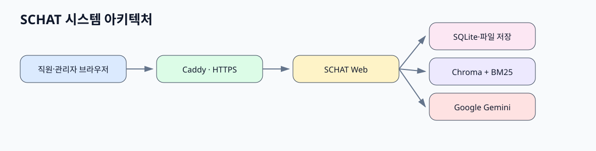
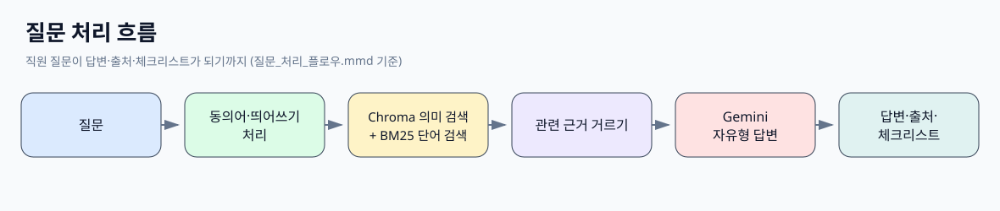
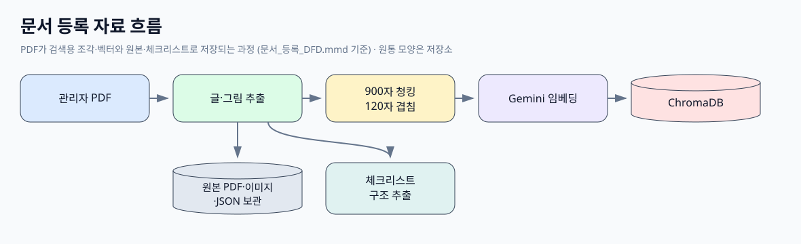
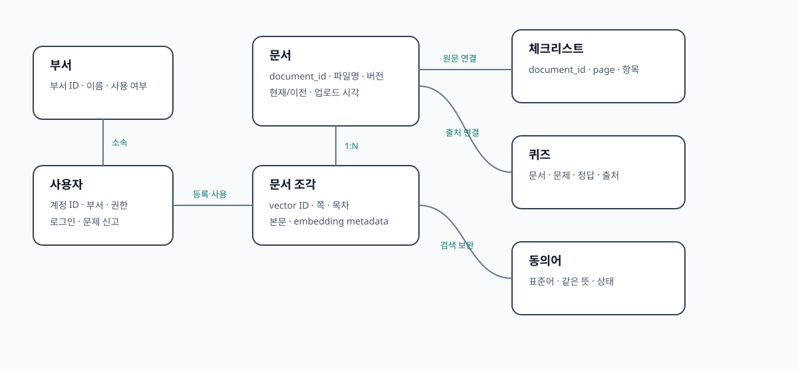

검증한 검색 기술과 AnythingLLM의 로그인·권한·문서관리·채팅 기반을 결합함.
버전 1부터 4까지의 흐름은 4. 개발 과정 › 버전 체계에서 볼 수 있습니다.
처음 보는 분은 이 메뉴부터 읽고, 아래 순서대로 다음 메뉴로 넘어가면 됩니다.
AnythingLLM의 서비스 기반에 직접 검증한 SCHAT 검색과 병원 전용 기능을 적용함.
관리자는 병원 문서를 관리하고 직원은 지침 근거를 검색함.
등록된 병원 지침과 교육자료에서 관련 근거를 찾아 답변과 출처를 제공함.
현재 버전 · SCHAT 버전 3
검증한 검색 기술과 AnythingLLM의 로그인·권한·문서관리·채팅 기반을 결합함.
버전 1부터 4까지의 흐름은 4. 개발 과정 › 버전 체계에서 볼 수 있습니다.
기능별 설명은 3. 기능과 상태 › 주요 기능에 있습니다.
문서를 등록한 뒤 직원이 근거와 함께 답변을 확인하기까지의 흐름입니다.
관리자가 승인된 PDF를 등록합니다.
문서를 검색 가능한 텍스트 단위로 나눕니다.
문장의 의미를 검색용 숫자 표현으로 바꿉니다.
검색용 의미 정보와 문서 위치를 저장합니다.
직원이 필요한 지침을 자연어로 질문합니다.
의미와 정확한 병원 용어를 함께 확인합니다.
선택된 병원 근거 안에서만 답변을 구성합니다.
문서명, 페이지, 항목과 공개 가능한 근거 원문을 보여줍니다.
질문과 관련된 지침서 조각을 먼저 찾고(RAG), 그 근거 안에서만 답변합니다.
질문과 문서의 의미를 비교하는 데 사용함.
의미가 비슷한 문서를 찾는 데 사용함.
약물명·검사명처럼 정확한 단어를 찾는 데 사용함.
의미 검색 75%와 단어 검색 25%를 함께 사용함.
검색된 병원 근거를 읽고 답변을 작성함.
PDF 등록 → 텍스트·이미지 추출 → 검색용 조각 생성 → Embedding 생성 → ChromaDB·BM25 저장 → 검색 가능
검사 및 시술과 수술 문서에서만 자동 추출함.SCHAT이 질문에 맞는 문서 조각을 고를 때 계산하는 점수의 뜻을 정리함. 비개발자도 검색 결과가 왜 그 순서로 나왔는지 이해할 수 있게 하는 설명 문서임.
이 문서는 설명만 담음. 실제 질문의 점수는 이 화면에 나오지 않음. 현재 점수는 서버 기록(로그)에만 남고 직원·관리자 채팅 화면에는 표시하지 않음.
| 값 | 쉬운 뜻 | 범위 | 높을수록 |
|---|---|---|---|
| 문서명 | 근거가 나온 PDF 이름 | - | - |
| 페이지 | 근거가 나온 PDF 쪽 | - | - |
| vectorScore | 질문과 문서 조각의 뜻이 얼마나 비슷한지 (코사인 유사도) | 0 ~ 1 | 뜻이 더 비슷함 |
| bm25Score | 질문의 단어가 문서 조각에 얼마나 들어 있는지 | 0 이상 (상한 없음) | 같은 단어가 더 많이, 더 드물게 나옴 |
| vectorRank | 뜻 검색에서 몇 등인지 | 1, 2, 3 … | 숫자가 작을수록 좋음 |
| bm25Rank | 단어 검색에서 몇 등인지 | 1, 2, 3 … | 숫자가 작을수록 좋음 |
| fusionScore | 두 등수를 75:25로 합친 최종 점수 | 0 ~ 1 | 최종 순서에서 더 앞에 옴 |
1 - 거리로 바꿔 0~1 점수로 사용함.null). 이상한 값이 아님.SCHAT 버전 3은 점수를 직접 더하지 않고 등수를 합침. 두 점수의 크기 단위가 달라서 등수를 쓰는 편이 공정함.
fusionScore = 0.75 ÷ vectorRank + 0.25 ÷ bm25Rank| 조각 | vectorRank | bm25Rank | 계산 | fusionScore | 최종 순서 |
|---|---|---|---|---|---|
| 가 | 1 | 3 | 0.75 ÷ 1 + 0.25 ÷ 3 | 0.833 | 1 |
| 나 | 2 | 1 | 0.75 ÷ 2 + 0.25 ÷ 1 | 0.625 | 2 |
| 다 | 3 | 없음 | 0.75 ÷ 3 + 0 | 0.250 | 3 |
| 라 | 없음 | 1 | 0 + 0.25 ÷ 1 | 0.250 | 4 |
fusionScore 순서가 곧 답변 근거는 아님. 합산 뒤에 아래 거르기를 거쳐 보통 상위 4개 정도만 답변 근거로 씀.
그래서 fusionScore가 높아도 최종 근거에서 빠질 수 있음.
SCHAT hybrid retrieval summary라는 줄로 선택된 근거의 vectorRank·vectorScore·bm25Rank·bm25Score·fusionScore가 남음.표시된 값은 실제 Compose 설정과 코드에서 확인 가능한 정보만 사용합니다.
Docker 서비스 · schat-safety-evaluator · schat-chromadb · schat-web
AnythingLLM의 서비스 기반에 직접 검증한 SCHAT 검색과 병원 전용 기능을 적용함.
검증한 검색 기술과 AnythingLLM의 로그인·권한·문서관리·채팅 기반을 결합함.




지금 직원과 관리자가 쓸 수 있는 기능과, 현재 버전의 검증 결과입니다.
병원 문서를 Hybrid 방식으로 검색하고 근거 기반 답변을 제공함.
문서명과 쪽을 표시하고 근거 원문 또는 원본 PDF를 제공함.
검사·시술·수술 자료를 체크 가능한 작업창으로 제공함. 문서 새 버전에서도 같은 체크리스트는 이어서 공개함. 관리자 보기·수정 화면은 직원 화면과 같은 구조로 보여줌.
등록된 지침서를 바탕으로 퀴즈를 제공함.
개인 계정, 채팅, 이용 가이드, 문제 신고를 제공함.
문서·사용자·체크리스트·퀴즈·동의어·FAQ·설정을 관리함. 직원 0명인 부서는 삭제할 수 있음.
사용 통계와 저장공간 확인·정리 기능을 제공함. 어디에서도 쓰지 않는 원본 PDF는 서버 재검증 후 삭제할 수 있음.
SCHAT 버전 3을 2026년 9월 30일 확정함.
| 확인 항목 | 결과 | 상태 |
|---|---|---|
| Hybrid Hit@10 | 100% | ✅ 완료 |
| Hybrid MRR | 0.738 | ✅ 완료 |
| 범위 밖 질문의 문서 밖 추측 | 0/20건 | ✅ 완료 |
| A8 검색 회귀검사 | 기준선 유지함 | ✅ 완료 |
| 기존 검색 Top-10 | 동일함 | ✅ 완료 |
| 핵심 실패 문항 최소 수정 | 관련 회귀검사를 통과함 | ✅ 완료 |
| 주요 기능 | 기존 동작을 유지함 | ✅ 완료 |
| 환경 | 용도 |
|---|---|
| 로컬 개발 환경 | 코드와 문서를 수정하고 자동검사를 실행함. |
| 테스트 웹환경 | 화면과 기능을 운영 반영 전에 확인함. |
| 운영 웹서버 | Google Cloud에서 시범 운영에 사용함. 명시적인 승인 후 변경함. |
과거의 기능 비교 단계와 세부 검증 과정은 작업일지에 보존함.
현재 확인된 테스트·검사 파일은 총 158개입니다.
SCHAT이 버전 1부터 지금까지 어떻게 바뀌었는지, 무엇을 시도하고 결정했는지 봅니다.
현재 운영 버전은 SCHAT 버전 3임. 버전 번호는 개발 구조가 크게 달라진 단계를 기준으로 구분함.
SCHAT의 버전은 단순한 숫자 수정이 아니라 개발 구조가 크게 달라진 단계를 기준으로 구분함.
| 버전 | 핵심 변화 | 쉽게 설명 |
|---|---|---|
| 버전 1 | 처음 직접 만든 병원 문서 챗봇 | 병원 문서를 검색하고 답변하는 챗봇의 기본 구조를 직접 만들기 시작함. |
| 버전 2 | ChromaDB·Embedding·BM25·Hybrid 검색을 적용한 직접 개발 RAG | 질문의 의미와 정확한 단어를 함께 찾는 검색 구조를 직접 개발하고 성능을 검증함. |
| 버전 3 | 버전 2의 검색 기술과 AnythingLLM 서비스 기반을 결합한 현재 SCHAT | 검증한 검색 구조를 유지하면서 로그인·권한·문서 관리·채팅 화면 등 서비스 기능을 AnythingLLM 기반으로 구성함. |
| 버전 4 | 다음 개선 단계 | 문서 최신 버전 관리, Citation 정밀 개선, 전체 품질검증과 RAGAS 적용 등을 진행하는 단계임. |
버전 1 초기 병원 문서 챗봇 직접 개발
↓
버전 2 ChromaDB + Embedding + BM25 + Hybrid 검색 고도화
↓
버전 3 검증된 검색 기술 + AnythingLLM 서비스 기반
↓
버전 4 문서 버전 관리·Citation·품질검증 추가 개선현재 운영 버전은 SCHAT 버전 3임.
SCHAT 1.0이라고 부른 확정 버전은 새 체계의 SCHAT 버전 3에 해당함.| 이전 문서 표현 | 새 공식 표현 |
|---|---|
| SCHAT 1.0 | SCHAT 버전 3 |
| 1.0 완료 | 버전 3 완료 |
| 1.0 확정 | 버전 3 확정 |
| 1.0 이후 | 버전 4 이후 |
| SCHAT 1.1 | SCHAT 버전 4 |
| 1.1 개선사항 | 버전 4 개선사항 |
실제 Git commit 메시지, 과거 파일명과 코드 식별자는 역사적 증거이므로 변경하지 않음. 해당 이름이 문서에 등장하면 현재 버전 체계와 다른 과거 명칭임을 함께 설명함.
공식 기준 문서 · docs/00_현재상태/SCHAT_버전_체계.md
날짜별 작업일지는 삭제하지 않고 간단한 설명으로 접어 두었습니다.
기존 `SCHAT 1.0`과 `1.1 이후` 표현이 개발 단계의 버전 번호와 혼동되어 공식 명칭을 버전 1~4 체계로 통일함.
SCHAT 버전체계 정리부서 관리는 만들기, 이름 변경, 사용중지, 다시 사용만 있었고 서버와 화면 어디에도 삭제 기능이 없었음.
부서삭제와 원본PDF정리SCHAT 개발 과정의 문제, 시행착오, 의사결정과 AI 협업 질문을 한 문서로 정리함.
개발복기 AI협업 인수인계현재 SCHAT 버전 3과 시범운영 상태에 맞게 프로젝트 안내를 정리함.
프로젝트안내 정리관리자 `체크리스트 관리`에서 "체크리스트 보기"와 "수정" 화면의 모양이 서로 달라서, 원문과 대조하면서 고치기 어려웠음.
체크리스트 보기수정 화면통일문서를 새로 올리면 문서 번호(document_id)가 바뀜.
체크리스트 새버전 자동공개진정·수혈 관련 실패 4문항과 source 0 문제 2문항을 재현하는 회귀 테스트를 확인했습니다.
21문항 근거선택개선 검증직원 체크리스트 창은 원래도 "체크" 항목의 세부 줄마다 체크박스를 보여 주었습니다.
체크리스트 세부줄 동의어 자동생성재검색 방식 C는 계속 꺼 둡니다(`SCHAT_AGENT_RESEARCH_MODE` 설정 없음 = 꺼짐).
체크리스트관리 화면과 배포전점검`docs/02_멘토링/` 폴더를 만들고 2026-09-19 멘토링 조언 28개의 이행 현황을 정리했습니다.
멘토링 이행현황 문서`docs/02_멘토링/산출물_2026-09-30/`에 구조도, Chroma 설계서, 평가 체계, 버전 3 기준, WBS와 2단계 계획을 모았습니다.
멘토링 개발산출물지침서 원문은 띄어쓰기가 빠진 경우가 많습니다(예: "투석관삽입술").
띄어쓰기 검색개선**대화 기록:** `workspace_chats` 표에 저장됩니다.
사용통계 화면`05_인수인계/서버_배포_및_업데이트_안내.md`를 만들었습니다. 개발자가 아니어도 따라 할 수 있게 쉬운 한국어로 썼고, 명령어는 복사해 붙여넣을 수 있게 넣었습니다.
서버 배포 안내앞으로 진행 상황·설명·보고를 모두 한국어로 쓰도록 저장소 `CLAUDE.md`(새로 만듦)와 `AGENTS.md`에 "작업 언어" 규칙을 넣었습니다.
사진질문 방식C보완 체크리스트연결대표 질문 10개(짧은 2, 절차 3, 약물 3, 이미지 2)를 각각 3번씩, 모두 30번 측정했습니다.
답변속도 측정실제 답변은 셋 다 "등록된 문서에서 확인되지 않습니다."였습니다(19자).
검색속도 개선과 재검색비교검색 마지막 거르기에서 문서가 통과하려면 둘 중 하나가 필요합니다.
거르기수정과 방식C위치: `SCHAT 관리자 설정 > 문제 신고 > FAQ 관리`에서 FAQ의 `수정`을 누르면 아래에 `위험 영역 > FAQ 삭제`가 나옵니다. 새 FAQ를 추가할 때와 목록 줄에는 나오지 않습니다.
FAQ 삭제관리자가 임시비밀번호를 만들고 전달하던 방식을 없앴습니다. 직원 추가, 일괄등록, 비밀번호 초기화 어디에서도 비밀번호가 만들어지거나 표시되지 않습니다. Excel 양식에도 비밀번호 칸이 없습니다.
처음로그인 비밀번호 직접설정일반 퇴사·휴직은 `사용중지`를 씁니다.
직원계정 완전삭제> 같은 날 뒤이어 임시비밀번호 방식을 없애고 직원이 처음 로그인할 때 비밀번호를 직접 정하는 방식으로 바꿨습니다. 아래의 임시비밀번호 관련 내용은 그 전 상태의 기록입니다. 바뀐 내용은 `2026-09-27_처음로그인_비밀번호_직접설정.md`를 보세요.
직원개인계정과 문제신고관리자가 지침서 근거로 AI 문제를 만들고 검토·공개합니다.
지침서 퀴즈폴더 옆 `(2008)`과 목록 위 `2008 관련 문서`를 숨겼습니다. 이 숫자는 예전 업로드까지 포함한 내부 파일 수였습니다.
저장공간정리 조회와 미리보기FAQ는 정상 저장되어 있었고, 관리자가 등록한 1건도 `직원에게 보이기(승인)` 상태였습니다.
이용가이드와 비밀번호만들기외부 `sch-guide-ai/src`, `sch-guide-ai/tools`에서 실제 안전 검사에 필요한 파일만 `schat-core/src`, `schat-core/tools`로 복사했습니다.
안전검사 저장소내부 독립배포위치: `SCHAT 관리자 설정 > 문제 신고 > 신고 목록`에서 신고를 누르면 나오는 상세 화면 맨 아래 `위험 영역 > 신고 삭제`. 목록에는 삭제 버튼을 두지 않았습니다.
신고삭제 저장공간삭제 모바일원문문서 관리 화면의 `custom-documents` 폴더는 화면에서만 `등록된 문서`로 보입니다. 내부 폴더 이름과 저장 위치는 그대로입니다.
문서관리 표시정리와 문서수 조사왼쪽 아래 렌치 아이콘 하나만 남겼습니다. 누르면 `SCHAT 관리자 설정`이 열립니다. 관리자 계정에만 보이며, 직원 계정에는 보이지 않고 주소를 직접 입력해도 들어갈 수 없습니다.
관리자설정 통합과 직원화면 단순화Renal biopsy 한 건에만 있던 체크리스트를 `검사 및 시술(26.04.07).pdf`의 표준 양식 페이지 전체로 넓혔습니다.
검사시술 체크리스트 일반화와 로고크기로그인 화면 왼쪽 `순천향대학교 부속 천안병원` 옆과 오른쪽 `병원 실무지침 AI` 옆에 제공받은 파란색 SCH 로고를 표시합니다. 두 곳 모두 같은 이미지 파일 하나를 사용합니다.
SCH 로고통일과 탭아이콘직원용 체크리스트만 배경을 막지 않는 플로팅 작업창으로 변경했습니다.
Renal biopsy 플로팅작업창과 Citation정리`검사 및 시술(26.04.07).pdf` p.56의 신장조직검사 표를 보수적인 규칙으로 구조화합니다.
Renal biopsy 체크리스트 MVP직원용 체크리스트를 상위 항목과 세부 줄로 나누어 각각 체크박스를 표시합니다.
Renal biopsy 계층형체크리스트와 별도창새 PDF를 올릴 때 이미지를 SHA-256 hash로 구분하고, 이미 처리한 hash는 Gemini에 다시 보내지 않도록 했습니다.
이미지설명 전체보충과 자동증분직원 채팅에서 Agent와 도구의 내부 실행 문구를 숨겼습니다.
답변대기와 Citation 표시단순화관리자 화면에서 새 PDF를 등록할 때 검색용 문서 처리 전에 원본 PDF를 별도 보관 영역에 한 번 저장하도록 연결했습니다.
PDF 원본페이지 Citation답변 아래에서 중복되던 별도 `출처` 버튼과 아이콘 묶음을 제거했습니다.
Citation 원문화면 단순화`03_전체_공식문서` 밖에 독립된 `04_화면디자인` 폴더를 만들었습니다.
화면디자인 폴더정리NRS·FPRS·FLACC가 함께 나오는 통증평가 원문 화면은 질문한 척도가 설명에 있으면 허용하도록 초점 필터를 바꾸었습니다.
혼합척도 출처이미지 필터수정Query 모드의 간결한 답변은 유지하면서 직원이 답변에 사용된 병원 지침 원문을 채팅 화면에서 바로 확인할 수 있도록 출처 표시를 보완했습니다.
출처원문 펼쳐보기`03_전체_공식문서` 안에 있던 인수인계 문서를 저장소 최상위의 `05_인수인계` 폴더로 옮겼습니다.
인수인계 폴더분리큰 PDF를 올린 뒤 화면이 문서 목록의 앞 100건을 다시 읽어 선택하고 있었습니다. 이 때문에 PDF 처리는 끝났어도 workspace에는 일부 페이지만 등록될 수 있었고, 질문에 필요한 페이지가 검색 대상에 없었습니다.
문서등록과 검색복구기존 관리자 계정이 한 개이고 새 아이디와 중복되는 계정이 없는지 확인했습니다.
관리자 로그인아이디 변경검색에서는 관련 `image_description` 보조 벡터가 선택되고 있었습니다.
관련이미지 연결복구본문 근거 검색과 관련 이미지 후보 검색이 같은 검색 문장과 벡터를 사용했습니다. 본문 검색에 적합하게 확장된 문장은 답변 근거에는 도움이 되지만, 짧고 정확한 도구명으로 만들어진 이미지 설명과는 거리가 생길 수 있었습니다. 이 경우 `NRS` 이미지 설명이 등록되어 있어도 최종 `relatedImages`가 비어 화면에
관련이미지 원문질문 분리좌측 상단을 `SCHC` 마크와 `SCHAT` 이름으로 통일했습니다.
SCHAT UI 단순화와 다크모드채팅, 사이드바, 메뉴, 버튼, 입력창, 설정, 출처와 관련 이미지 영역이 같은 전역 산세리프 글꼴을 상속하도록 정리했습니다.
SCHAT 전체글꼴 통일관련 이미지를 정상 표시하는 Query 모드를 유지하면서, Automatic 모드보다 좁았던 본문 근거 검색 범위를 로컬 규칙으로 보완했습니다.
Query 본문검색 확장PDF 본문 검색은 그대로 두고, 새로 처리하는 PDF의 페이지 이미지도 답변에서 활용할 수 있게 했습니다.
PDF 내부이미지 검색과 표시NRS 답변은 간호실무지침 p.100의 본문을 근거로 사용했습니다. 이 본문 청크에는 같은 페이지에서 추출한 이미지 키 4개가 묶여 있었고, 이미지 설명은 모두 비어 있었습니다. 기존 화면 연결은 이미지 내용의 관련성을 확인하지 않고 같은 페이지의 이미지라는 이유만으로 간호부 로고와 표 조각까지 표시했습니다.
NRS 관련이미지 오표시 수정직원 workspace의 Automatic·AgentHandler 자유형 답변 방식은 그대로 유지했습니다.
Automatic 검색출처 원문표시병원 문서 관련 질문은 기존 Automatic·AgentHandler 흐름 안에서 `rag-memory`를 사용자 원문 질문으로 먼저 1회 실행합니다.
Automatic 선행검색 context 단순화Automatic·AgentHandler와 Gemini 자유형 답변 방식을 유지했습니다.
Automatic 병원질문 선행검색관리자 문서 관리 화면의 데이터 커넥터 탭을 제거하고 문서 관리 화면만 표시하도록 변경했습니다.
데이터커넥터 기능 제거날짜별 작업일지가 먼저 보이던 문서 화면을 비개발자가 SCHAT 전체 구조를 이해하기 쉬운 프로젝트 설명 화면으로 바꿨습니다.
SCHAT 설명화면 자동화출처 번호를 누르면 기존 문서명·페이지·항목명 아래에 해당 답변을 뒷받침한 등록 지침의 원문 범위를 함께 확인할 수 있도록 개선했습니다.
출처 근거원문 표시검색 결과와 안전검사 기준은 그대로 두고, 안전검사를 통과한 답변을 직원이 읽기 쉬운 모양으로 정리했습니다.
직원답변 표현방식 개선현재까지 개선한 Gemini Embedding 2, ChromaDB 116개 벡터, BM25 보완 검색, 질문별 직접 근거 선택, 절차 연속 근거, closed-book 원칙과 출처 표시를 유지하면서 직원 실제 답변 경로의 Python 안전검사 Gate만 기본적으로 끕니다.
Python 안전검사 Gate 분리검색 결과와 임상 내용은 바꾸지 않고, 직원 화면의 절차 답변만 짧은 요약·단계 제목·bullet 구조로 읽기 쉽게 표시하도록 개선했습니다.
절차답변 문서형 표시수혈 절차 후보의 임상 의미와 `즉시` 강도는 근거와 같았습니다. 하지만 근거의 대상 목록에 있던 쉼표가 후보에서 `와`로 바뀌면서, 기존 검사기가 `즉시`의 적용 범위를 다르게 나눠 행위 강도 변경으로 오판했습니다.
수혈절차 안전검사 오탐수정관리자 문서 화면에서 PDF의 페이지 단위 저장 행을 반복 노출하지 않고, 실제 업로드한 원본 PDF를 한 행씩 표시하도록 개선했습니다.
관리자 원본문서 목록절차 질문도 일반 질문과 같은 수의 근거만 전달했고, 항목명이 비어 있는 뒤쪽 절차 본문은 관련 근거에서 제외했습니다. 그래서 Gemini가 실제 문서에 이어지는 단계들을 보지 못하고 한두 단계만 답할 수 있었습니다.
답변충분성 개선PDF 표가 한 줄로 붙어 저장돼 직원 화면에서 읽기 어려웠습니다. 실제 표에서 확인되는 반복된 셀 경계만 사용해 다음 네 종류가 빠짐없이 구분되도록 했습니다.
표표시와 절차근거 마무리기존 검사는 검색된 근거의 모든 내용을 답변에 반복하도록 요구했습니다. 이 때문에 질문과 관계없는 주변 설명을 생략한 자연스러운 답변도 차단되는 경우가 있었습니다.
질문범위 안전검사 개선직원이 SCHAT 채팅창에서 이미지 1장을 첨부하고 질문할 수 있게 준비했습니다.
직원채팅 이미지입력실제 문서 청크 크기가 최대 8,192자로 설정되어 있었습니다.
직원답변 가독성 개선 진행기존 ChromaDB와 계정·대화 데이터베이스를 먼저 백업했습니다.
승인문서 재색인과 질문검수`수혈 종류`처럼 범위가 분명한 질문에도 수혈 목적·동의서·확인 절차가 함께 표시됐습니다.
검색정밀도와 근거부족 개선`수혈 종류` 질문에서 직접 관련된 혈액제제 종류 외의 주변 수혈 근거가 함께 선택됐습니다.
검색의도와 절차답변 보완직원이 질문하면 AI 답변을 바로 보여주지 않고, 기존 SCHAT의 Python 안전검사를 먼저 거치도록 연결했습니다.
직원채팅 안전검사 연결다중 사용자 모드를 활성화했습니다.
직원계정과 실제질문 검수Gemini Embedding 2를 문서와 질문의 의미 벡터 생성에 사용합니다.
문서현황 업데이트로컬 SCHAT 기능 비교에 직접 필요하지 않은 원본 프로젝트의 부가 폴더를 정리했습니다. 이후 웹 삽입 기능을 검토할 수 있도록 삽입 도구 원본과 자동검사에 필요한 일부 개발 도구는 복구해 보존했습니다.
필요없는 원본폴더 정리VS Code Explorer에서 개발자가 아닌 사용자가 자주 확인하는 항목을 위로 올렸습니다.
자주보는 문서를 위로 정리기능 비교용 테스트 저장소의 쉬운 화면과 웹 문서를 기존 SCHAT 문서에서 완전히 분리했습니다.
기존 SCHAT 문서와 분리문제를 만났을 때 어떤 원인을 의심했고 무엇을 결정했는지 남긴 복기 문서입니다.
문서 성격: 개발 과정 원자료에 가까운 복기·인수인계 문서
기준일: 2026-09-30
대상 독자: SCHAT을 이어받는 팀원과 여러 개발 기록을 다시 분석할 AI
보안 원칙: API Key, 비밀번호, JWT, 직원 개인정보, 환자정보는
[REDACTED]로 표시함.
이 문서는 완성된 기능만 설명하는 제품 안내서가 아님. 어떤 문제가 있었고, 당시에는 무엇을 원인으로 보았으며, 무엇을 시도했고, 나중에 어떤 사실이 확인됐는지를 가능한 한 함께 남긴 개발 복기 자료임. 같은 사건에 대해 대화 당시의 판단과 후속 작업일지의 결론이 다르면 둘 중 하나를 지우지 않고 모두 기록함.
시간 순서는 다음 태그로 구분함.
[순서 확인됨]: 날짜가 있는 작업일지, Git 커밋 또는 대화 흐름으로 순서를 확인함.[대략적인 순서]: 여러 자료의 전후 관계는 확인되지만 정확한 시각이나 일부 중간 단계가 부족함.[순서 불명]: 이 대화에 결과나 요청은 있으나 발생 순서를 확정할 자료가 부족함.[다른 대화에서 이어진 것으로 추정]: 사용자가 이미 완료됐다고 전제하거나 과거 결과를 인용했지만 이 대화에 최초 구현 과정이 모두 남아 있지 않음.문서에 쓰인 결과 상태는 성공, 실패, 부분 성공, 판단 불가로 구분함. “테스트 통과”와 “실제 직원 브라우저에서 확인”도 따로 구분함. 이 구분은 Citation 화면 수정에서 테스트는 통과했지만 실제 화면에 과거 경로가 남았던 경험 때문에 중요함.
SCHAT은 관리자가 등록한 병원 지침과 교육자료에서 질문과 관련된 근거를 찾아 직원에게 답변, Citation, 근거 원문과 원본 PDF 페이지를 제공하는 병원 실무지원 시스템임. 환자정보를 저장해 진단하거나 치료 결정을 대신하는 시스템이 아님.
현재 구조는 AnythingLLM의 서비스 기반을 사용하면서 SCHAT 전용 검색, 안전, 문서, 체크리스트, 사용자 기능을 추가한 형태임. 직원 로그인, 관리자 권한, 문서 등록, 채팅 UI 같은 서비스 기반을 AnythingLLM에서 활용하고, 병원 문서 검색과 검증 방식은 프로젝트 요구에 맞게 크게 수정함.
[대략적인 순서]
처음에는 AnythingLLM을 사용하지 않고 VS Code에서 SCHAT RAG 검색 시스템을 직접 개발함. 이 단계에서 다음 핵심 검색 기술을 직접 구현하거나 검증함.
이 과정의 중요한 결과는 작은 무료 임베딩 모델에서 Google Gemini Embedding으로 바꿨을 때 예전 버전의 정답 21문항 Hit@10이 33%에서 95%로 올랐다는 점임. 이후 운영 버전에서는 같은 질문을 현재 문서명·페이지 기준으로 다시 연결해 Vector Hit@10 100%, MRR 0.743, Hybrid Hit@10 100%, MRR 0.738을 확인함.
[순서 확인됨]
직원용 서비스로 확대하면서 로그인, 권한, 사용자 관리, 문서 업로드, 채팅 화면, 관리자 설정, 서버 운영까지 모두 직접 만들면 범위가 너무 커지는 문제가 생김. 이에 검색 핵심 기술은 직접 유지·검증하고, 서비스 기반은 AnythingLLM을 활용하는 방향을 선택함.
현재는 stock AnythingLLM을 그대로 사용하는 것이 아님. Gemini Embedding, ChromaDB, BM25, Hybrid 75:25, 병원 문서만을 이용한 답변, Citation, 원본 PDF, 이미지 설명, 체크리스트, 직원 계정, 문제 신고, 이용 가이드, 퀴즈, 관리자 통계와 저장공간 관리 등을 SCHAT 목적에 맞게 추가하거나 수정함.
[순서 확인됨]
71aeabc8e9e857a6a01c76be4993b8f39a52614ab598ac76de4e57143ba6132a[다른 대화에서 이어진 것으로 추정] 작은 무료 임베딩과 Gemini Embedding의 검색 성능 비교를 수행함.[순서 확인됨] Gemini Embedding과 ChromaDB를 적용함.[순서 확인됨] BM25를 보조 검색으로 연결함.[순서 확인됨] Vector 75% + BM25 25% Hybrid 검색을 운영 기준으로 사용함.[순서 확인됨] 질문의 조사와 요청 표현을 제외하고 병원 핵심어를 비교하는 근거 선택 필터를 구현함.[순서 확인됨] 문서에 근거가 없으면 “등록된 문서에서 확인되지 않습니다.”로 답하도록 답변 원칙과 안전장치를 정리함.[순서 확인됨] 절차 질문은 연속 근거와 최대 6개 근거를 활용하도록 보완함.[순서 확인됨] Automatic 경로에서 병원 질문이면 답변 전에 문서검색을 수행하도록 선행 검색을 연결함.[순서 확인됨] 붙여쓰기와 띄어쓰기를 같은 검색 표현으로 처리함.[순서 확인됨] 제한적인 활용형 정규화와 요청 표현 제거를 추가함.[순서 확인됨] 그중, 그 후 같은 후속질문에 직전 임상 주제를 보완함.[순서 확인됨] 피 넣기를 수혈 의도로 감지하는 제한적 구어체 alias를 적용함.[순서 확인됨] 병원 질문인데 source가 0개인 경우 이전 대화나 모델 지식으로 구체적 답변을 만들지 않게 함.[순서 확인됨] 본문 근거를 우선하고 image_description은 보조로 사용하도록 근거 역할을 구분함.[순서 확인됨] 검색 속도를 1회 약 1.40초에서 약 0.64초로 개선함. 검색 방식과 Top-K는 유지함.[순서 확인됨] 관리자 답변 규칙을 운영 우선값으로 유지하면서 YAML 기준본·fallback 구조를 추가함.[순서 확인됨] 큰 PDF 업로드 뒤 문서 목록 앞 100건만 다시 읽어 workspace에 일부 페이지만 등록되는 문제를 고침.[순서 확인됨] 업로드 서버가 실제 처리한 상대 문서 경로를 반환하고 화면이 해당 batch만 선택하도록 변경함.[순서 확인됨] workspace 문서를 100건에서 543건으로 복구함.[순서 확인됨] SQLite vector 매핑과 live Chroma vector를 151개에서 717개로 복구함.[순서 확인됨] 본문 654개와 이미지 설명 63개를 구분해 확인함.[순서 확인됨] 청킹 크기 약 900자와 겹침 약 120자를 사용함.[순서 확인됨] 문서명, 페이지, section, document_id, content_type 같은 metadata를 검색·Citation에 사용함.[순서 확인됨] 원본 PDF 보관과 검색 색인을 분리함.[대략적인 순서] 문서 family/version/current 구조를 설계했으나 DB migration과 최신 버전 필터는 버전 4로 이관함.[순서 확인됨] PDF 내부 이미지를 추출하고 SHA-256 hash로 중복을 식별함.[순서 확인됨] image_description을 본문 vector와 분리된 보조 vector로 저장함.[순서 확인됨] 새 hash만 Gemini Vision에 보내고 성공·빈 응답·실패를 cache에 저장함.[순서 확인됨] 중단 후 재실행해도 완료된 hash를 다시 호출하지 않는 backfill을 구현함.[순서 확인됨] 고유 이미지 1,172개 중 기존 설명 34개를 제외한 1,138개를 Vision 대상으로 처리함.[순서 확인됨] Vision 1,138회, 재시도 0회, 성공 882개, 실패 256개를 기록함.[순서 확인됨] 결제 복구 뒤 새 Vision 호출 없이 cache의 성공 설명 882개만 Embedding함.[순서 확인됨] 고유 설명 916개를 검색 후보로 반영함. 당시 live 이미지 보조 vector는 945개였고 기존 중복 29개가 포함됨.[순서 확인됨] 본문 654개의 개수와 snapshot hash를 유지함.[순서 확인됨] 같은 페이지라는 이유만으로 로고와 무관한 표 조각을 표시하지 않고, 직접 선택된 image_description의 image_key만 관련 이미지로 표시함.[순서 확인됨] NRS 질문에서 FPRS 선택 화면이 따라오는 문제를 수정함.[순서 확인됨] 답변 출처에 근거 excerpt를 표시함.[순서 확인됨] Citation을 눌러 원문을 펼쳐보는 UI를 추가함.[순서 확인됨] 원본 PDF를 별도 보관하고 opaque pdfRef로 연결함.[순서 확인됨] 로그인과 workspace 권한을 확인하는 PDF API를 구현함.[순서 확인됨] 단일 HTTP Range 요청을 지원함.[순서 확인됨] Citation에서 실제 원본 페이지를 여는 브라우저 PDF viewer를 연결함.[순서 확인됨] 원본이 없거나 viewer가 실패하면 excerpt와 직접 연결 이미지를 보여주는 fallback을 유지함.[순서 확인됨] 같은 PDF+같은 page Citation을 한 행으로 합침.[순서 확인됨] 같은 PDF의 다른 page와 서로 다른 PDF의 같은 page는 구분함.[순서 확인됨] Citation 행에서 section/title을 숨기고 출처 N · 파일명 · p.N만 표시함.[순서 확인됨] 질문·답변과 직접 관련된 source만 화면에 남기는 relevance filter를 적용함. 0개가 되면 기존 Citation을 fallback으로 유지함.[순서 확인됨] @agent is executing rag-memory... 같은 내부 실행 문구를 직원 화면에서 숨김.[순서 확인됨] undefined: Found 2 additional piece of context...라는 다른 status event도 추적해 숨김.[순서 확인됨] 답변 전에는 답변 생성 중 · N초만 표시함.[순서 확인됨] 첫 답변 조각과 Agent status가 같은 UUID를 사용할 때 status 문자열이 답변 앞에 합쳐지는 문제를 수정함.[순서 확인됨] streaming, 완료 메시지, 새로고침 후 historical message 경로를 따로 확인함.[순서 확인됨] 검사 및 시술(26.04.07).pdf p.56을 Renal biopsy MVP 원본으로 사용함.[순서 확인됨] PDF 업로드 뒤 규칙 기반으로 checklist 후보를 감지하고 파일 JSON에 자동 저장함.[순서 확인됨] DB migration, Gemini 추가 호출, Chroma/BM25 재색인 없이 구현함.[순서 확인됨] 검사목적을 informational로 분류해 checkbox를 표시하지 않음.[순서 확인됨] 동의서, 금식여부, IV line, 검사 전 준비, Prepare, 검사 후 관찰 등을 checkable로 표시함.[순서 확인됨] ①·② 같은 세부 설명을 별도 checkbox로 쪼개지 않음.[순서 확인됨] renal biopsy, renal bx, 신장 조직검사, 신생검 alias로 질문과 checklist를 연결함.[순서 확인됨] 관리자 화면에서 보기, 수정, 원본 p.56 보기를 제공함.[순서 확인됨] 관리자 수정은 checklist JSON만 바꾸고 본문 검색 자료는 재색인하지 않음.[순서 확인됨] 직원용 중앙 modal을 이동·최소화·크기 조절 가능한 floating 작업창으로 바꿈.[순서 확인됨] drag, resize, 최소화, 다시 펼치기, checkbox와 section 접기 상태를 같은 화면에서 유지함.[순서 확인됨] overlay 없이 채팅, Citation, PDF viewer를 동시에 조작할 수 있게 함.[순서 확인됨] 모바일은 하단 고정 panel 방식으로 fallback함.[순서 확인됨] 직원 개인 계정과 관리자/직원 권한을 분리함.[순서 확인됨] 직원 Excel 일괄등록과 최초 로그인 비밀번호 설정을 구현함.[순서 확인됨] 사용자 완전 삭제 경로를 추가함.[순서 확인됨] 이용 가이드와 FAQ를 제공함.[순서 확인됨] 문제 신고와 관리자 확인 기능을 제공함.[순서 확인됨] 지침서 기반 퀴즈 생성·검수·공개 기능을 제공함.[순서 확인됨] 관리자 사용 통계 화면을 제공함.[순서 확인됨] 저장공간 조회·미리보기·정리 기능을 제공함.[순서 확인됨] 관리자 동의어 화면에서 23개를 검토해 17개 사용, 6개 끔, 검토 필요 0개로 정리함.[순서 확인됨] Python 안전검사 gate를 별도 서비스로 분리함.[순서 확인됨] 수혈 절차가 안전검사에서 오탐되는 사례를 수정함.[순서 확인됨] safety evaluator가 저장소 바깥 ../../src, ../../tools를 mount하던 구조를 저장소 내부 schat-core/로 옮김.[순서 확인됨] 복사 파일의 .env, __pycache__, 데이터 파일을 제외하고 secret을 점검함.[순서 확인됨] Docker에서 schat-web, schat-chromadb, schat-safety-evaluator 세 서비스를 실행함.[순서 확인됨] Google Cloud VM과 Caddy HTTPS 운영 구조를 마련함.[순서 확인됨] 운영 배포 전에 DB 백업을 만들고 서버 상태를 확인함.[순서 확인됨] 최종 GitHub push는 성공했으나 운영 서버 git pull은 GitHub 인증 문제로 실패해 배포를 중단함.[순서 확인됨] docs를 정본, docs_view를 생성형 열람 화면으로 사용함.[순서 확인됨] 시스템 아키텍처, 질문 처리 흐름, DFD, ERD를 Mermaid/SVG로 작성함.[순서 확인됨] Chroma 컬렉션 명세, 평가 체계, 버전 3 기준, WBS, RAGAS 계획을 작성함.[순서 확인됨] A8 21문항을 현재 운영 문서명·페이지에 다시 연결해 Vector/BM25/Hybrid를 동일 조건으로 평가함.[순서 확인됨] 범위 밖 질문 20개를 검증해 문서 밖 추측 0건을 확인함.[순서 확인됨] 21문항 실패 원인과 검색 후단 근거 선택 문제를 분석함.[순서 확인됨] 21문항 전체 Automatic 재실행 수집기가 WebSocket을 열지 못한 실패를 기록하고 결과를 성능 통계에 넣지 않음.[순서 확인됨] SCHAT 버전 3을 문서상 확정하고 문서 버전 관리와 RAGAS 실행을 버전 4로 이관함.순서: [순서 확인됨]
당시 하려던 것
큰 병원 PDF를 업로드해 전체 페이지를 workspace와 Chroma에 등록하려고 함.
발생한 현상
PDF 처리는 끝났지만 화면이 문서 목록 앞 100건을 다시 읽어 선택함. 결과적으로 workspace에는 일부 페이지만 들어가 필요한 페이지가 검색되지 않음.
오류·증거
사용자가 AI에게 한 질문
이 최초 문제의 정확한 원문은 [확인 불가]. 후속 요청에서는 PDF를 다시 올리거나 Chroma를 초기화하지 말고 실제 등록 경로와 개수를 확인하라고 반복해 지시함.
AI의 최초 판단
검색 알고리즘보다 자료 등록 누락 가능성을 확인함.
AI가 제안한 해결책
실제로 시도한 것
색인 복구 도구로 workspace와 Chroma 매핑을 안전하게 복구하고 dry-run을 추가함.
결과
성공
최종 해결
정확한 업로드 batch 경로를 계약으로 사용하고, 검색이 이상할 때 PDF 재업로드나 volume 삭제보다 개수와 dry-run을 먼저 확인하도록 함.
변경된 파일·함수
정확한 최초 파일 목록은 [확인 불가]. 문서 처리, 업로드 API, frontend 문서 선택, 검색 복구 도구가 변경된 것으로 작업일지에서 확인됨.
현재 상태
해결 완료
순서: [순서 확인됨]
당시 하려던 것
질문 범위에 직접 맞는 병원 근거만 선택하려고 함.
발생한 현상
수혈 종류처럼 좁은 질문에 수혈 목적, 동의서, 확인 절차까지 섞여 나옴. 문서에 없는 비터널형 질문에도 비슷한 카테터 문서를 억지로 근거로 사용함.
오류·증거
당시 색인의 section 정보가 비어 혈액제제 종류와 수혈 절차 구분이 어려웠음.
사용자가 AI에게 한 질문
정확한 최초 원문은 [확인 불가]. 이후 사용자는 검색·답변·Citation의 각 단계를 분리해 실제 runtime 경로를 확인하라는 방식으로 반복 요청함.
AI의 최초 판단
질문의 모든 단어를 동일하게 보고 약한 결과로 개수를 채우는 것이 원인이라고 판단함.
제안과 시도
결과
부분 성공
초기 질문 정확도는 좋아졌으나, 이 필터가 나중에 S04·S11·S12·T16에서 좋은 A8 후보까지 제거하는 새로운 문제가 됨. 즉 약한 근거를 막는 정책 자체는 필요했지만 요청 표현과 활용형을 내용 필수어로 취급한 구현은 과도했음.
다음 시도와 최종 해결
후속 작업에서 임상 핵심어와 요청 표현을 분리하고 제한적인 활용형 정규화, 후속문맥 보완, 본문 우선을 추가함. Vector/BM25/Hybrid 순위는 변경하지 않음.
현재 상태
해결 완료이나 전체 21문항 실제 Automatic 재검증은 버전 4로 남음.
순서: [순서 확인됨]
당시 하려던 것
문서 근거를 이용한 수혈 절차 답변을 제공하면서 숫자, 시간, 조건, 금기, 행위 강도를 안전검사하려고 함.
발생한 현상
정상적인 병원 수혈 절차 답변이 Python 안전검사에서 오탐될 수 있었음.
오류·증거
저장된 수혈 절차 근거 6개와 후보 6문장 재생이 핵심 검증으로 사용됨. 전체 pytest는 1,046개 통과, 2개 건너뜀, 5개 실패였지만 실패 4개는 기존 평가 산출물 권한, 1개는 기존 UAT 문서의 기대치 차이였음.
AI의 판단과 해결책
검색과 답변을 바꾸지 않고 action/strength 안전 판단만 조정함. Python safety gate를 서비스로 분리해 SCHAT Web과 독립 실행함.
결과
성공
핵심 원칙
검색, BM25, 근거 선택, 본문 vector를 바꾸지 않고 안전검사의 오탐 지점만 수정함.
현재 상태
해결 완료
순서: [순서 확인됨]
당시 하려던 것
PDF 안의 그림을 답변과 함께 보여주려고 함.
발생한 현상
NRS 답변의 p.100 본문에는 같은 페이지 이미지 키 4개가 묶여 있었음. 기존 UI가 이미지 내용의 관련성을 확인하지 않고 같은 페이지라는 이유만으로 간호부 로고와 표 조각을 표시함. image_description을 채운 뒤에는 NRS, FPRS, FLACC 이름이 화면 메뉴에 같이 있어 NRS 질문에도 FPRS 선택 화면이 후보가 됨.
오류·증거
NRS 통증척도는 어떻게 평가해?가 nrs, 통증척도, 어떻게, 평가해로 토큰화돼 실제 근거 일치율이 1/4로 낮아짐.AI의 최초 판단
처음에는 이미지 자료 누락을 의심함. 누락 설명을 보완한 뒤에도 FPRS가 따라와, 실제 원인은 질문 정규화와 이미지 주제 판별임을 확인함.
시행착오
어떻게를 요청 표현에서 제외하고 평가해를 평가로 제한 정규화함.FPRS가 선택된, FLACC가 선택된 설명은 질문의 영문 도구명과 맞을 때만 사용함.결과
성공
최종 해결
페이지에 묶인 related_image_keys를 그대로 쓰지 않고 검색·답변 근거로 직접 선택된 image_description의 image_key만 표시함.
현재 상태
해결 완료
순서: [순서 확인됨]
당시 하려던 것
등록 PDF의 고유 이미지 전체에 설명을 만들어 이미지 질문도 검색 가능하게 하려 함.
발생한 현상
고유 이미지 1,172개 중 1,138개를 Vision에 보낸 실행에서 882개 성공 뒤 256개가 실패함. 최종 API 응답은 HTTP 402였음.
사용자가 AI에게 한 질문 원문
“Google API 결제/크레딧 상태가 복구되었습니다. 이번 작업에서는 새로운 Vision 설명 생성은 하지 말고, 이미 성공하여 cache에 저장되어 있는 image_description만 Gemini Embedding으로 변환해 ChromaDB 보조 벡터에 반영해주세요.”
사용자는 Vision 재시도 금지, PDF 재업로드 금지, body 재색인 금지, 안정적인 document + image_key ID, API key 출력 금지를 함께 지시함.
AI의 최초 판단
결제/쿼터 실패로 판단함. 다만 hash별 세부 오류 유형이 저장되지 않았으므로 256개 각각이 모두 같은 원인이었다고 기술적으로 증명할 수는 없음.
실제로 시도한 것
결과
성공
479527c9ac5ec8b2cec31dde660cd47188a7600ccbdecba1a2771888238fe43b 유지불확실성
실패 256개의 세부 분류는 [확인 불가]. 당시 실행 순서와 HTTP 402를 근거로 운영상 “결제/쿼터”로 집계함.
현재 상태
성공한 cache 반영은 해결 완료. 실패 256개의 Vision 재시도는 별도 승인 전까지 보류함.
순서: [순서 확인됨]
당시 하려던 것
Agent 내부 상태를 숨기고 답변 생성 중 · N초만 보여주며 같은 PDF·같은 page Citation을 하나로 합치려 함.
첫 결과
관련 테스트와 production build가 통과함. 그러나 실제 브라우저에서 문제가 재현됨.
사용자가 AI에게 한 질문 원문
“실제 브라우저 검증 결과 이전 수정이 완전히 적용되지 않았습니다.”
“실제 화면:
undefined: Found 2 additional piece of context to help answer this q...”
“동일 PDF + 동일 페이지 Citation 중복이 그대로 남아 있음”
“테스트 통과 여부가 아니라 실제 런타임 렌더링 경로를 기준으로 다시 추적해주세요.”
AI의 최초 판단
기존에 숨긴 @agent is executing rag-memory... event와 실제 남은 Found N additional piece... event가 같은 종류라고 충분히 구분하지 못함. Citation도 공통 helper를 만들었지만 실제 current/historical renderer에 모두 연결됐는지 처음 검증이 부족했음.
나중에 확인된 사실
schat-web 컨테이너가 최신 frontend bundle로 재생성되지 않아 과거 UI가 남아 있었음.다음 시도
결과
성공
undefined: Found..., rag-memory, tool 문구 미표시답변 생성 중 · 2초만 표시핵심 교훈
컴포넌트 단위 테스트와 production build만으로 실제 배포 bundle이 바뀌었다고 판단하면 안 됨. current, streaming, historical 렌더 경로와 실행 중 컨테이너를 확인해야 함.
현재 상태
해결 완료
순서: [순서 확인됨]
당시 하려던 것
NotebookLM처럼 Citation에서 원본 PDF 페이지를 보게 하려 함.
사용자가 AI에게 한 질문 원문
“현재 Citation의 ‘근거 원문 보기’ 방식을 NotebookLM처럼 PDF 원본 페이지 중심으로 변경하고 싶습니다.”
발생한 현상
검색용 추출 텍스트는 답변 근거에는 적합하지만 표 구조, 그림, 페이지 배치를 완전히 보여주지 못함. 기존 업로드 경로는 원본 PDF를 항상 안전하게 보존해 viewer에 연결하는 구조가 아니었음.
AI의 제안
실제로 시도한 것
사용자가 설계를 승인한 뒤 원본 보관, pdfRef, 보안 API, viewer, 관리자 연결 기능을 구현함.
결과
성공
본문 vector는 작업 전후 654개로 같았고 재색인하지 않음.
현재 상태
해결 완료
순서: [순서 확인됨]
당시 하려던 것
PDF에서 Renal biopsy 체크리스트를 자동 추출해 직원에게 제공하려 함.
발생한 현상
표의 큰 행 제목을 모두 checkbox로 만들면 검사목적 같은 설명 항목까지 수행 항목으로 보이는 문제가 예상됨. 현재 PDF parser는 표의 row/column을 완전히 보존하지 않았음.
사용자가 AI에게 한 질문 원문
“모든 큰 항목/행 제목을 무조건 체크박스로 만들지는 말아주세요.”
“검사목적 / 설명 / 참고사항 → 일반 정보 텍스트”
“동의서 / 금식 / IV line / 검사 전 준비 / Prepare / 검사 후 확인사항 등 → 체크 가능한 항목”
“Renal biopsy MVP에서는 ‘검사목적’은 반드시 informational로 처리하여 checkbox를 표시하지 마세요.”
AI의 제안과 결정
검사 전, 검사 후 구획과 짧은 행 제목+뒤따르는 상세 문장을 보수적으로 사용함.결과
성공
변경 구조
server/storage/document-checklists/현재 상태
Renal biopsy MVP는 해결 완료. 다른 검사로 확장은 구조만 준비되고 실제 데이터는 범위에서 제외됨.
순서: [순서 확인됨]
당시 하려던 것
답변과 PDF를 보면서 checklist를 계속 사용하려 함.
사용자가 AI에게 한 질문 원문
“직원용 Renal biopsy 체크리스트를 ‘이동·최소화·크기 조절이 가능한 floating 작업창’으로 변경”
“사용자가 직접 X를 누르기 전까지 계속 떠 있고, 자유롭게 이동하고, 자유롭게 크기를 바꾸고, 최소화해서 옆에 두면서 답변·출처·PDF를 동시에 볼 수 있는 업무용 floating 작업창”
발생한 현상
기존 중앙 modal은 overlay로 채팅과 PDF 조작을 막고, 닫으면 다시 찾아 열어야 했음.
해결책
결과
성공
Docker Chromium에서 PC 38개, 모바일 6개, 총 44개 항목을 확인해 통과함.
현재 상태
해결 완료
순서: [순서 확인됨]
당시 하려던 것
검색 후보는 유지하되 직원 Citation에는 답변에 직접 관련된 근거만 표시하려 함.
발생한 현상
내부 response.sources에는 p.56, p.8, p.14, p.30이 모두 저장됐고 화면에도 4개가 보임. 질문과 checklist 직접 근거는 p.56임.
사용자가 AI에게 한 질문 원문
“검색 후보 전체가 아니라 질문/답변과 직접 관련된 Citation만 표시”
“무조건 top1로 자르지는 마세요.”
“filter 결과가 0개가 되면 기존 Citation 전체를 fallback으로 표시”
AI의 제안
검색, Gemini evidence, response.sources 저장은 그대로 두고 frontend 공통 helper에서 질문 alias, 답변 전문 표현, source excerpt 겹침을 보아 표시만 정리함.
결과
성공으로 문서화됨. current와 historical에 공통 helper를 적용함.
후속 주의
나중의 21문항 분석에서 “서버 source가 처음부터 0개”인 문제는 frontend Citation filter로 고칠 수 없음을 확인함. 즉 표시 정리와 근거 생성 문제는 별개임.
현재 상태
Renal biopsy 표시 문제는 해결 완료. 일반 질문의 Citation 정밀도는 버전 4 후속 개선임.
순서: [순서 확인됨]
당시 하려던 것
SCHAT 버전 3 최종 21문항 답변 품질을 점검하려 함.
발생한 현상
A8 Top-10에는 정답 페이지가 있었지만 Automatic의 검색 후 근거 선택에서 모두 제거됨.
사용자가 AI에게 한 질문 원문
“A8에서 검색기는 이미 정답을 찾고 있습니다.”
“이번 작업은 ‘더 잘 검색하게 만들기’가 아니라 ‘이미 찾은 좋은 근거를 Automatic 근거 선택 단계에서 잘못 버리지 않게 만들기’입니다.”
대표 증거
진정할 때 주의할 점은?: A8 p.166 1위, p.162 4위, p.163 5위, p.159 6위였으나 Automatic 선택 0개진정은 어떻게 진행하는 거야?: A8 p.160 1위, p.161 2위 등이었으나 p.75 낙상 image_description만 남음그중 진정 후에는 어떻게 관찰해?: A8 p.161 2위, p.162 3위, p.163 9위였으나 선택 0개수혈간호를 전체적으로 핵심 요약해줘: Hybrid Top-10 중 9개가 기대 범위였으나 선택 0개AI의 최초 판단
처음에는 검색 실패, 추가 rag-memory, Gemini 선택 실패, frontend Citation 문제 등 여러 가능성을 열어 둠.
나중에 확인된 사실
핵심은 검색 후 필터임.
진정할, 전체적으로, 핵심, 요약해줘, 그중이 내용 필수어처럼 남음.진정 후, 진행하는 초기평가가 우연히 겹쳐 살아남음.최소 수정
변경 파일
server/utils/vectorDbProviders/chroma/schatBm25.jsserver/utils/agents/aibitat/utils/hospitalDocumentIntent.jsserver/utils/agents/aibitat/index.js결과
부분 성공
현재 상태
핵심 최소 수정은 해결 완료. 전체 답변 품질 재검증은 버전 4로 이관함.
순서: [순서 확인됨]
대표 질문
성인은 몇 분마다 모니터링해?피 넣기 전에 뭐부터 체크해야 돼?발생한 현상
병원 질문 감지 목록에 진정, 수혈, 간호, 검사 같은 명시어가 없어 선행 rag-memory가 강제되지 않음. 그런데 같은 기본 thread의 이전 대화 영향을 받아 source 0개인데 15분 같은 구체 답변이 생성됨.
AI의 최초 판단
Citation 저장 또는 frontend 렌더 문제가 의심될 수 있었음.
나중에 확인된 사실
server response.sources 자체가 0개였음. memory.js가 source를 보관하고 chat-history.js가 그대로 저장하므로 frontend hiding이 원인이 아니었음.
해결책
피 넣기를 수혈 intent로 제한 정규화함.결과
부분 성공
회귀 테스트는 통과했으나 21문항 전체 실제 Automatic 브라우저 결과는 수집 실패로 미확인임.
현재 상태
코드 안전장치는 해결 완료, 실제 전체 재검증은 버전 4임.
순서: [순서 확인됨]
당시 하려던 것
실제 직원 계정 대신 로컬 전용 가상 직원 계정과 30분 JWT를 사용해 21문항을 각 독립 thread에서 1회 실행하려 함.
사용자 조건
발생한 현상
HTTP 시작 요청은 보냈지만 수집기가 Agent WebSocket을 열지 않아 agentInitWebsocketConnection, statusResponse까지만 받음. Gemini 답변과 Citation은 생성·수집되지 않음.
AI의 판단
빈 결과를 제품 실패나 답변 성능으로 집계하면 안 된다고 판단함.
실제로 시도한 것
결과
실패
최종 처리
사용자가 21문항 전체 실제 재실행을 SCHAT 버전 3 필수 조건에서 제외하고 버전 4 품질검증으로 이관함. 빈 결과 파일은 성능 통계에서 제외함.
현재 상태
미해결, 버전 4에서 실제 WebSocket 경로를 포함한 수집 방식으로 다시 확인해야 함.
순서: [순서 확인됨]
당시 하려던 것
현재 저장소만 clone해 Docker로 배포할 수 있게 하려 함.
사용자가 AI에게 한 질문 원문
“docker/docker-compose.yml의 schat-safety-evaluator가 저장소 바깥 경로 (
../../src,../../tools/evaluation_action_strength.py)를 마운트하고 있어. 이 저장소만으로 배포할 수 있게 바꿔줘.”
추가 조건:
“외부 원본 경로를 테스트 때문에 잠시 못 쓰게 했다면, 테스트가 끝나면 반드시 원래대로 복구해줘. 이름을 바꾸거나 옮기기만 하고 삭제는 하지 마.”
“복사한 파일(특히 settings.py)에 API 키, 비밀번호 같은 비밀 값이 직접 적혀 있지 않은지 push 전에 확인”
해결책
schat-core/로 복사함..env, __pycache__, 데이터 파일을 제외함.../schat-core/src와 ../schat-core/tools/evaluation_action_strength.py로 변경함..gitignore에서 schat-core의 .env 제외를 확인함.결과
성공
c68e4f99 Make safety evaluator self-containedorigin/schat-server에 push함.현재 상태
해결 완료
순서: [순서 확인됨]
당시 하려던 것
로컬에서 완료·검증한 SCHAT 버전 3을 Google Cloud VM schat-server의 ~/schat-anythingllm-test에 배포하려 함.
사용자가 AI에게 한 질문 원문
“1. 로컬 최종 점검 2. GitHub commit / push 3. Google Cloud 서버 SSH 접속 4. 운영 DB 백업 5. 서버 git 상태 확인 6. git pull 7. Docker rebuild...”
안전 조건
DB, 사용자, PDF, Chroma volume, .env를 삭제·덮어쓰지 않고 docker compose down -v, force push, git reset --hard를 금지함.
실제로 성공한 단계
c7efc972b58cf61bfa538f1289ed08340a3514da~/backup/anythingllm-20260929-1713.db.env와 Chroma volume 존재 확인발생한 오류
fatal: could not read Password for 'https://sch-guide@github.com': No such device or addressAI의 행동
강제 reset, 인증 우회, 운영 파일 덮어쓰기를 하지 않고 즉시 중단함.
결과
부분 성공
GitHub에는 반영됐지만 운영 서버의 pull, rebuild, 실제 사이트 검증은 완료되지 않음.
현재 상태
미해결. 서버 GitHub 인증을 안전하게 구성한 뒤 git pull --ff-only, Docker rebuild, 브라우저 점검이 필요함.
순서: [대략적인 순서]
당시 하려던 것
같은 지침서 v1.0과 v1.1이 모두 남아 있을 때 직원 검색에는 최신 버전만 사용하고 관리자는 구버전을 보관하려 함.
확인된 현재 구조
AI의 제안
family, version, current/active, uploadedAt, replacedBy/currentDocumentId를 추가하고 Vector/BM25/Hybrid에 동일 active document set을 사용함.
실제 결과
미구현
당시 세션에서 Node/Docker 테스트 웹을 실행할 수 없어 A8 Top-10을 즉시 비교할 수 없었음. 사용자의 중단 조건에 따라 DB migration과 검색 필터를 적용하지 않음. 이후 버전 4 개선 항목으로 이관함.
현재 상태
미해결
순서: [순서 확인됨]
발생한 현상
관리자 화면이나 storage의 수치가 “문서 수”처럼 보이지만 실제로는 페이지 문서, 검색 조각, image_description이 섞여 있을 수 있었음.
확인된 수치 사례
해결
문서·페이지·본문 vector·image vector·checklist·original을 구분해 관리자 표시와 저장공간 미리보기에 사용함. 삭제 전후 count를 비교하는 보호 장치를 둠.
현재 상태
해결 완료
처음 판단: Agent status와 Citation dedupe 테스트 및 build가 통과했으므로 화면도 수정됐다고 판단함.
실제 결과: 실제 화면에 undefined: Found...와 p.113 중복이 남음.
왜 맞지 않았는지: 실행 중 컨테이너가 최신 frontend bundle이 아니었고, rag-memory 실행 문구와 추가 context status가 다른 event type이었으며 UUID 결합 경로도 있었음.
수정된 판단: 테스트 계약이 아니라 streaming/current/historical의 실제 runtime renderer와 실행 중 bundle을 확인해야 함.
최종 해결: container rebuild, 첫 답변 chunk 교체, 공통 Citation helper 연결, 실제 Chromium 이벤트 재생으로 검증함.
처음 판단: p.100이 이미지 설명 상한 20 뒤에 있어 설명이 없는 것이 주원인이라고 봄.
실제 결과: 설명을 보완한 뒤에도 NRS 질문에 FPRS 화면이 선택됨.
왜 맞지 않았는지: 같은 화면 메뉴에 NRS/FPRS/FLACC 문자열이 함께 들어 있었고 요청 표현과 활용형이 핵심어 일치율을 떨어뜨림.
수정된 판단: 자료 누락과 질문 정규화·이미지 주제 판별은 별도 문제임.
최종 해결: 직접 선택된 image_description만 표시하고 선택 도구명 불일치 화면을 제외함.
처음 판단: Citation relevance filter나 streaming/history renderer가 source를 숨겼을 가능성을 검토함.
실제 결과: S06·T15는 server response.sources부터 0개였음.
왜 맞지 않았는지: 질문이 병원 intent로 감지되지 않아 retrieval 자체가 실행되지 않았음.
수정된 판단: frontend 표시와 server source 생성 문제를 분리함.
최종 해결: 구어체 intent, source 0 안전장치, server-side 근거 선택을 보완함.
처음 판단: Hybrid Hit@10 100%이면 21문항 답변도 충분히 성공할 것으로 기대함.
실제 결과: S04·S11·S12·T16에서 Top-10 정답이 후단 필터로 제거됨.
왜 맞지 않았는지: A8은 후보 회수 성능이고 Automatic은 추가 필터와 context 제한을 적용함.
수정된 판단: 검색 Top-10과 Gemini 최종 context source를 별도 회귀 기준으로 봄.
최종 해결: 검색기는 그대로 두고 post-retrieval filter만 최소 수정함.
처음 판단: HTTP 요청이 수락되고 status event가 오면 평가를 수집할 수 있을 것으로 봄.
실제 결과: Agent WebSocket이 연결되지 않아 Gemini 답변과 Citation이 생성·수집되지 않음.
왜 맞지 않았는지: Automatic 경로는 시작 HTTP 외에 WebSocket 연결이 필요했음.
수정된 판단: 빈 답변을 제품 실패로 집계하지 않고 수집기 실패로 분리함.
최종 해결: 버전 3 기준에서 전체 21문항 실재답변 재실행을 제외하고 버전 4에서 올바른 수집 경로로 재검증하기로 함.
처음 판단: family/current 필드를 추가하면 최신 버전 필터를 구현할 수 있다고 설계함.
실제 결과: 테스트 환경에서 A8 Top-10과 body vector를 즉시 비교할 수 없는 상태였음.
왜 맞지 않았는지: DB migration과 검색 필터는 데이터 손상 및 검색 회귀 위험이 있어 검증 없이 진행하면 사용자의 안전 조건을 위반함.
수정된 판단: 설계만 보존하고 구현은 버전 4로 이관함.
최종 해결: 아직 구현하지 않음.
처음 판단: SSH와 DB 백업이 성공해 pull과 rebuild까지 이어갈 수 있을 것으로 봄.
실제 결과: 서버의 HTTPS Git remote가 비대화형 환경에서 GitHub password를 읽지 못함.
왜 맞지 않았는지: 서버 GitHub 인증이 준비되지 않았음.
수정된 판단: 인증을 우회하거나 서버 변경을 덮어쓰지 않고 중단해야 함.
최종 해결: 미완료. GitHub 인증 구성 후 재배포가 필요함.
상황: 검색 핵심은 직접 개발했지만 직원 서비스에는 로그인·권한·문서관리·채팅·관리자 설정·서버 운영이 추가로 필요함.
선택지 A: 모든 서비스 기반을 직접 계속 개발함.
선택지 B: AnythingLLM의 서비스 기반을 사용하고 SCHAT 검색과 병원 기능을 이식·확장함.
선택: B.
이유: 검색 핵심 검증에 집중하면서 서비스 공통 기능 개발 범위를 줄이기 위함.
결과: AnythingLLM 기반의 SCHAT 버전 3으로 발전함.
현재 유지 여부: 유지됨.
상황: 의미가 다른 표현은 Vector가 강하고 약물명·검사명 같은 정확 단어는 BM25가 보완함.
선택지 A: Vector만 사용함.
선택지 B: BM25만 사용함.
선택지 C: Vector 75% + BM25 25% Hybrid를 사용함.
선택: C.
이유: 현재 21문항에서 Hybrid Hit@10 100%, MRR 0.738로 버전 3 기준을 통과했고 두 방식의 장점을 함께 사용함.
현재 유지 여부: 유지됨. 비율 변경 금지 원칙이 여러 작업에 반복됨.
선택지 A: 본문과 image_description을 같은 종류로 취급함.
선택지 B: content_type=image_description 보조 vector로 분리함.
선택: B.
이유: 이미지 질문을 지원하되 절차·숫자 답변에서 이미지 설명이 본문을 밀어내지 않게 하기 위함.
결과: NRS와 S11 같은 오류를 진단하고 body 우선 정책을 적용할 수 있었음.
현재 유지 여부: 유지됨.
선택지 A: 결제 복구 후 실패 256개를 즉시 재호출함.
선택지 B: 새 Vision 호출 없이 성공 cache만 Embedding함.
선택: B.
이유: 사용자가 명시적으로 새 Vision 생성과 재시도를 금지했고 비용·중복 호출을 막아야 했음.
결과: 882개 설명을 221회 Embedding으로 안전하게 반영하고 본문 654개를 유지함.
현재 유지 여부: 실패 256개는 별도 승인 전까지 유지됨.
선택지 A: 추출된 excerpt만 표시함.
선택지 B: 원본 PDF 페이지를 우선 표시하고 excerpt fallback을 유지함.
선택: B.
이유: 표·그림·페이지 레이아웃을 원본 그대로 확인해야 함.
결과: pdfRef, 권한 API, Range, viewer를 추가함.
현재 유지 여부: 유지됨.
선택지 A: PDF를 다시 업로드하고 전체 재색인함.
선택지 B: 검색 데이터는 그대로 두고 원본만 연결함.
선택: B.
이유: 이미 안정화된 body vector와 검색 결과를 보호하기 위함.
결과: 본문 654개와 search snapshot을 유지함.
현재 유지 여부: 유지됨.
선택지 A: DB migration으로 정규화함.
선택지 B: server/storage/document-checklists/ 파일 JSON으로 분리함.
선택: B.
이유: MVP 범위를 작게 유지하고 Chroma/BM25/본문 vector와 완전히 분리하기 위함.
결과: 자동 추출·자동 active·관리자 수정이 검색 재색인 없이 동작함.
현재 유지 여부: 유지됨.
선택지 A: LLM으로 표 의미를 생성·보완함.
선택지 B: 원문 문자열과 규칙만 사용함.
선택: B.
이유: 병원 PDF에 없는 항목을 생성하면 안 되고 Renal biopsy p.56 하나의 MVP였음.
결과: 검사목적 informational, 확인 항목 checkable, 세부문장 details 구조를 보존함.
현재 유지 여부: Renal biopsy MVP에서 유지됨.
선택지 A: 중앙 modal 유지.
선택지 B: overlay 없는 draggable/resizable panel.
선택: B. 관리자 modal은 유지함.
이유: 답변·Citation·PDF를 동시에 보며 체크해야 함.
결과: 실무 작업창으로 개선됨.
현재 유지 여부: 유지됨.
선택지 A: rag-memory Top-N과 Gemini evidence를 줄임.
선택지 B: 내부 source는 유지하고 frontend 공통 helper에서 표시만 필터함.
선택: B.
이유: 검색 품질과 answer evidence를 훼손하지 않기 위함.
결과: Renal biopsy p.56만 표시함. 단 server source 0 문제는 별도의 server-side 보완이 필요했음.
현재 유지 여부: 유지됨.
선택지 A: YAML이 관리자 DB 값을 덮어씀.
선택지 B: workspace override → 관리자 기본 답변 규칙 → YAML 기준본 → 코드 fallback 순서.
선택: B.
이유: 현재 운영 prompt를 자동 변경하지 않고 사람이 읽을 기준본을 보관하기 위함.
결과: server/config/prompts/answer-system.yaml을 추가하되 관리자 값을 유지함.
현재 유지 여부: 유지됨.
선택지 A: 즉시 DB migration과 current filter를 적용함.
선택지 B: 설계만 남기고 A8 회귀를 즉시 확인할 환경이 준비된 뒤 구현함.
선택: B.
이유: 운영 데이터와 검색 기준선을 위험하게 바꿀 수 있었음.
결과: 버전 4 개선사항으로 이관함.
현재 유지 여부: 유지됨.
선택지 A: 수집기 문제를 해결할 때까지 버전 3 확정을 보류함.
선택지 B: A8, 범위 밖 20문항, 핵심 6문항 회귀와 주요 기능을 기준으로 버전 3을 확정하고 전체 재실행은 버전 4로 둠.
선택: B. 사용자가 직접 기준을 확정함.
결과: SCHAT 버전 3 문서 확정.
현재 유지 여부: 유지됨.
원래 우리 방식
SCHAT RAG 핵심을 직접 개발함. 검색과 평가에 집중했으며 서비스 전체 기반은 직접 구현 범위가 아니었음.
비교한 방식
Mintplex-Labs AnythingLLM은 workspace, 채팅, 사용자, 관리자 설정, 문서 관리, provider 추상화 등 서비스 기반을 제공함.
가져온 부분
가져오지 않고 SCHAT 방식으로 유지·수정한 부분
우리 프로젝트에 맞게 수정한 부분
기본 AnythingLLM UI와 내부 상태를 직원 화면에서 숨기고, 병원 문서 근거·PDF·체크리스트 중심으로 단순화함. 관리자 기능도 병원 운영 흐름에 맞게 추가함.
가져온 뒤 발생한 문제
최종 유지 구조
AnythingLLM 서비스 기반 + SCHAT 검색/안전/병원 전용 기능의 결합 구조임.
[순서 불명]
안전 evaluator가 한때 저장소 바깥 ../../src, ../../tools/evaluation_action_strength.py를 mount함. 이는 부모 프로젝트 또는 기존 직접 개발 SCHAT의 일부 코드를 재사용한 흔적으로 확인됨.
실제로 가져온 부분
evaluator가 실제 사용하는 최소 src 모듈과 evaluation_action_strength.py를 현재 저장소의 schat-core/로 복사함.
단순 참고인지 실제 복사인지
safety evaluator 파일은 실제 복사함. BM25/Vector/Hybrid 전체가 어느 커밋에서 어떤 파일 단위로 옮겨졌는지는 현재 대화만으로 [확인 불가]임.
가져오지 않은 부분
.env, __pycache__, 데이터 파일, 원본 운영 데이터는 복사하지 않음.
최종 유지 구조
현재 저장소만으로 evaluator를 배포할 수 있도록 schat-core/를 포함함.
[대략적인 순서]
Open Notebook을 직접 사용해 본 이력이 문서에 있으나, 직원별 로그인·권한이 없어 병원 서비스 기반으로는 어렵다고 판단함. 최종 개발 기반으로 코드를 가져왔다는 증거는 없음. 따라서 참고한 서비스로만 분류함.
NotebookLM은 Citation에서 원본 PDF 페이지를 보여주는 사용자 경험의 참고 사례임. NotebookLM 코드를 가져온 것이 아님. UI/경험 참고로 분류함.
이 대화에는 특정 팀원 repository 이름, commit, 실제 cherry-pick 또는 복사 파일 목록이 충분히 없음. [확인 불가]로 남김.
파일: server/utils/vectorDbProviders/chroma/schatBm25.js 및 Chroma provider 주변
기존 방식: Vector와 단어 검색이 분리되거나 초기 직접 개발 코드에 존재함.
문제: 의미가 같은 다른 표현과 정확 용어를 동시에 잘 찾을 필요가 있음.
변경된 방식: Vector 0.75 + BM25 0.25 결합.
결과: Hybrid Hit@10 100%, MRR 0.738.
Before/After 세부 코드: [확인 불가]. 현재 비율은 여러 문서와 테스트에서 확인됨.
파일:
server/utils/agents/aibitat/utils/hospitalDocumentIntent.jsserver/utils/agents/aibitat/index.jsserver/utils/vectorDbProviders/chroma/schatBm25.js기존 방식: 명시적 병원 단어가 없으면 선행 검색이 빠질 수 있고, 요청 표현과 활용형이 내용어처럼 근거 필터에 사용됨.
문제: S04·S11·S12·T16 근거 탈락, S06·T15 source 0.
변경된 방식: 요청 표현 제외, 제한적 어미 정리, 직전 임상 주제 보완, 피 넣기→수혈, body 우선.
결과: 55/55 회귀 통과, A8 Top-10 동일.
파일: 업로드 server/frontend와 복구 도구. 정확한 파일명은 [확인 불가].
기존 방식: 문서 목록 앞 100건을 다시 읽고 선택함.
문제: 일부 페이지 누락.
변경된 방식: 업로드가 실제 처리한 상대 경로를 반환하고 그 batch만 등록함.
결과: 543페이지, 본문 654개 복구.
파일: PDF 이미지 처리, Chroma upsert, 관련 이미지 응답 경로. 정확한 전체 목록은 [확인 불가].
기존 방식: 페이지의 모든 related_image_keys를 관련 이미지처럼 사용할 수 있었음.
문제: 로고·무관한 표·FPRS 화면 오표시.
변경된 방식: content_type=image_description, stable document+image_key, 직접 채택된 image_key만 표시함.
결과: NRS 관련 이미지 정확도 개선, 본문 vector 불변.
파일:
server/utils/originalPdfUpload.jsserver/utils/originalDocuments.js기존 방식: Citation excerpt와 추출 이미지 중심.
문제: 표·그림·페이지 배치 확인이 어려움.
변경된 방식: 원본 별도 저장, opaque pdfRef, 권한 확인 API, Range, viewer, excerpt fallback.
결과: 실제 원본 페이지 열기와 기존 문서 무재색인 연결.
파일: frontend Citation component, citationFilter.js, PromptReply/HistoricalMessage 경로. 정확한 상대 경로는 [확인 불가].
기존 방식: source chunk마다 행을 만들고 section/title까지 표시함.
문제: p.113 중복, 과도한 항목명, 저관련 페이지.
변경된 방식: PDF+page dedupe, section 숨김, 질문·답변 relevance 표시 필터, 0건 fallback.
결과: Renal biopsy p.56만 표시, 수혈 p.113 중복 제거.
파일: server/storage/document-checklists/, checklist API, 관리자 UI, 직원 ChecklistLauncher. 정확한 component 파일명은 [확인 불가].
기존 방식: checklist 기능 없음 또는 중앙 modal.
문제: PDF 구조의 자동 사용 필요, modal이 화면을 가림.
변경된 방식: 규칙 기반 자동 추출, informational/checkable, 관리자 JSON 수정, floating panel.
결과: Renal biopsy p.56 end-to-end MVP.
파일:
docker/docker-compose.ymlschat-core/src/...schat-core/tools/evaluation_action_strength.py기존 방식: ../../src, ../../tools/... 외부 mount.
문제: 현재 저장소만으로 배포 불가.
변경된 방식: repo 내부 schat-core/ mount.
결과: 세 container healthy, commit c68e4f99.
파일: server/config/prompts/answer-system.yaml
기존 방식: 관리자 DB 또는 코드 fallback 중심.
문제: 사람이 읽고 버전 관리할 기준본이 필요함.
변경된 방식: YAML은 baseline/fallback, 관리자 prompt는 운영 우선값.
결과: 관리자 prompt hash, body vector, A8 Top-10 불변.
파일:
문서도구/문서화면_만들기.py검사/문서화면_분리_검사.pydocs_view/index.htmldocs_view/schat-overview-data.json기존 방식: 문서를 수동 정리하거나 Mermaid source만 노출될 수 있었음.
문제: 비개발자가 구조도와 현재 상태를 보기 어려움.
변경된 방식: docs를 정본으로 읽어 docs_view를 생성하고 SVG 구조도를 표시함.
결과: 현재 상태·멘토링·구조도·작업일지를 웹에서 열람함.
아래는 AI와 협업하는 방식을 학습할 수 있도록 의미 있는 요청을 원문에 가깝게 보존한 목록임. 긴 요청은 핵심 단락을 그대로 발췌함.
“실제 브라우저 검증 결과 이전 수정이 완전히 적용되지 않았습니다.”
“테스트 통과 여부가 아니라 실제 런타임 렌더링 경로를 기준으로 다시 추적해주세요.”
“A. 현재 streaming 답변 B. 답변 완료 후 현재 메시지 C. 새로고침 후 historical message 각각 어떤 컴포넌트가 사용되는지 확인해주세요.”
이 질문은 테스트가 녹색이라는 사실보다 실제 사용자 화면을 완료 기준으로 강제해 효과적이었음.
“A8에서 검색기는 이미 정답을 찾고 있습니다.”
“현재 검색 품질을 건드리지 말고 검색 이후의 근거 선택과 문맥 처리만 최소 범위로 보완해주세요.”
이 질문은 Vector/BM25/Hybrid를 변경하는 과도한 해결을 막고 원인이 있는 post-retrieval 단계만 수정하게 함.
“새로운 Vision 설명 생성은 하지 말고, 이미 성공하여 cache에 저장되어 있는 image_description만 Gemini Embedding으로 변환해 ChromaDB 보조 벡터에 반영해주세요.”
이 질문은 외부 호출 종류, 재시도, 본문 재색인, stable ID, secret 출력까지 제한해 비용과 회귀 위험을 함께 통제함.
“현재 Citation의 ‘근거 원문 보기’ 방식을 NotebookLM처럼 PDF 원본 페이지 중심으로 변경하고 싶습니다.”
후속 조건으로 원본 한 번 저장, pdfRef, 인증, 기존 excerpt fallback, 기존 문서 무재색인을 지정해 구현 경계를 명확히 함.
“체크리스트는 Gemini가 새로 작성하거나 임의로 보완하면 안 됩니다.”
“‘생성’이 아니라 ‘원본에 있는 내용을 구조화’하는 기능으로 만들어주세요.”
“검사목적은 반드시 informational로 처리하여 checkbox를 표시하지 마세요.”
이 질문은 의료 도메인에서 LLM의 일반지식 보충을 막고 데이터 모델과 UI 규칙을 구체화함.
“사용자가 명시적으로 X(닫기)를 누르기 전까지 자동으로 사라지면 안 됩니다.”
“새 질문 전송, 새 답변 생성, streaming → 완료 상태 변경, Citation 열기, PDF viewer 열기”에도 유지하라고 명시함.
이 질문은 단순히 “floating으로 바꿔줘”보다 lifecycle과 상태 보존 요구를 분명히 해 효과적이었음.
“이 저장소만으로 배포할 수 있게 바꿔줘.”
“외부 원본 경로를 테스트 때문에 잠시 못 쓰게 했다면, 테스트가 끝나면 반드시 원래대로 복구해줘. 이름을 바꾸거나 옮기기만 하고 삭제는 하지 마.”
이 질문은 기능 목표와 파괴적 작업 금지를 함께 제시함.
“운영 DB 백업, 서버 git 상태 확인, git pull, Docker rebuild, 컨테이너 상태 확인, 운영 사이트 실제 브라우저 점검”
“git conflict나 운영 데이터 손상 가능성이 있으면 즉시 중단”
이 질문 덕분에 GitHub 인증 실패 때 강제 복구를 하지 않고 안전하게 멈춤.
“이번에는 범위를 줄여서 1차 작업만 진행해주세요.”
“위 6문항만 재검증, A8 Top-10 확인, 전체 21문항 재실행·docs 갱신·테스트 웹 배포는 하지 말 것.”
긴 작업이 한 번에 진행되며 응답이 지연될 때, 원인에 해당하는 최소 파일과 6문항으로 줄여 진행 속도와 위험을 관리함.
“21문항 전체 실제 Automatic 재실행은 SCHAT 버전 3의 필수 조건에서 제외하고 버전 4 이후 추가 품질검증 항목으로 남깁니다.”
이 질문은 수집기 실패를 숨기지 않으면서도 이미 통과한 검색·범위 밖·회귀 기준으로 버전을 확정하는 제품 의사결정임.
실제 질문: “테스트 통과 여부가 아니라 실제 런타임 렌더링 경로를 기준으로 다시 추적해주세요.”
왜 효과적이었는가: 완료 기준을 실제 사용자 화면으로 바꾸고 current/streaming/historical을 분리함.
AI가 활용한 정보: 실제 문자열, 중복 Citation 예시, 예상 component 이름, Docker 브라우저 확인 요구.
실제 질문: “검색 결과 자체, Gemini evidence, response.sources DB 저장은 유지하고 사용자 화면에서만 Citation을 필터링”
왜 효과적이었는가: 데이터 경로 중 변경 가능한 한 단계를 지정함.
AI가 활용한 정보: p.56/p.8/p.14/p.30 실제 source 목록과 0건 fallback 규칙.
실제 질문: “BM25, Vector, Hybrid 75:25, Embedding, Top-K, Chroma는 변경하지 말고 post-retrieval만 수정”
왜 효과적이었는가: 이미 검증된 기준선을 보호하고 원인과 해결 범위를 일치시킴.
AI가 활용한 정보: A8 Top-10, 문항별 기대 page, context 0 증거.
실제 질문: “원본에 없는 항목 생성 금지, ①·② 별도 checkbox 금지, 검사목적 informational”
왜 효과적이었는가: 추상적인 “체크리스트 만들어줘”를 의료 안전 규칙과 테스트 가능한 UI 계약으로 바꿈.
AI가 활용한 정보: p.56 문서, 항목명, 상세문장 구조, checkable/informational 모델.
실제 질문: “DB 백업 후 진행, needs_review 23개 전부 검토, 넓은 묶음은 off 유지, 검색 품질이 나빠지면 즉시 off로 원복”
왜 효과적이었는가: 데이터 변경 전 백업과 rollback 조건을 명시함.
AI가 활용한 정보: 전체/사용/끔/검토 필요 count, 대표 alias 회귀.
실제 질문: “찾아봐봐”
왜 부족했는가: 찾을 대상, 저장소, 결과 형식이 명확하지 않음.
당시 필요한 정보: 어떤 파일이나 결과를 찾는지, 읽기 전용인지, 문서/코드 어느 범위인지.
더 좋은 질문 예시: “현재 저장소에서 A8 21문항 정답 데이터와 평가 스크립트 위치를 읽기 전용으로 찾아 파일명과 역할만 알려줘.”
실제 질문: 첨부 텍스트만 제공하고 본문 요청이 비어 있던 두 사례.
왜 부족했는가: 첨부 내용을 실행하라는 것인지 요약하라는 것인지 불명확함.
당시 필요한 정보: 첨부 요청을 그대로 수행할지, 계획만 세울지, 코드 수정 허용 여부.
더 좋은 질문 예시: “첨부한 요청서의 작업을 그대로 수행하되 코드 수정은 하지 말고 분석 문서만 작성해줘.”
실제 질문: 처음의 광범위한 41문항 평가·문서버전·프롬프트 YAML·docs_view·RAGAS를 한 번에 요구한 요청.
왜 부족했는가: 서로 다른 위험 수준과 외부 호출, DB migration, UI 변경이 한 작업에 섞임.
당시 필요한 정보: 가장 먼저 확인할 gate와 실패 시 중단 조건.
더 좋은 질문 예시: 이후 사용자가 실제로 한 것처럼 “먼저 41문항 평가 결과를 확인하기 전에는 DB migration을 진행하지 말 것”이라고 단계 gate를 둠.
좋은 질문은 다음 다섯 가지를 함께 줌.
등장: 작은 무료 모델과 Gemini Embedding 비교, A8 평가.
왜 필요했는가: 질문과 문서의 뜻이 비슷한지 숫자로 비교하기 위함.
프로젝트 역할: ChromaDB Vector 검색의 입력을 만듦.
쉬운 설명: 문장 뜻을 좌표로 바꿔 비슷한 문장을 가까이 찾는 방법임.
등장: 본문 654 vector, image_description 보조 vector, collection 유지.
프로젝트 역할: 의미가 비슷한 문서 조각을 찾는 vector DB임.
쉬운 설명: 문장 뜻의 좌표를 저장하고 가까운 자료를 찾아주는 창고임.
등장: 정확한 검사명·약물명·약어 검색, Hybrid 25%.
프로젝트 역할: 글자와 단어가 정확히 겹치는 자료를 찾음.
쉬운 설명: 질문에 나온 중요한 단어가 문서에 얼마나 잘 나타나는지 점수를 매김.
등장: SCHAT 버전 3 검색 기준.
프로젝트 역할: Vector 75%와 BM25 25%를 결합함.
쉬운 설명: 뜻이 비슷한 자료와 정확한 단어가 있는 자료를 함께 찾음.
등장: A8 21문항 성능 평가.
프로젝트 역할: 정답 페이지가 상위 10개 안에 있는 비율과 얼마나 앞 순위에 있는지 측정함.
쉬운 설명: Hit@10은 “열 개 안에 정답이 있는가”, MRR은 “정답이 얼마나 빨리 나오는가”를 뜻함.
등장: S04·S11·S12·T16 실패.
프로젝트 역할: 검색 Top-K 뒤에서 Gemini에 실제로 넘길 근거를 고름.
쉬운 설명: 검색기가 후보를 찾은 뒤 답변에 쓸 자료만 다시 고르는 두 번째 선별 단계임.
등장: 문서 밖 질문 20개, 관리자 답변 규칙.
프로젝트 역할: 등록 문서와 검색 근거 밖 일반 의학지식을 보충하지 않음.
쉬운 설명: SCHAT이 아는 척하지 않고 병원에 등록된 자료만 보고 답함.
등장: source dedupe, relevance, original PDF viewer.
프로젝트 역할: 답변이 어느 문서·페이지를 근거로 했는지 보여줌.
쉬운 설명: 직원이 답변의 출처를 직접 확인할 수 있는 근거 표시임.
등장: 원본 PDF 보안 연결.
프로젝트 역할: 내부 document_id나 저장 경로를 직원에게 노출하지 않고 원본을 여는 공개 참조값임.
쉬운 설명: 실제 파일 경로 대신 쓰는 안전한 표 번호임.
등장: PDF 그림 검색, NRS/FPRS, Vision backfill.
프로젝트 역할: PDF 이미지를 설명한 텍스트를 별도 보조 vector로 검색함.
쉬운 설명: 그림을 글로 설명해 질문으로 찾을 수 있게 만든 자료임.
등장: 이미지 중복과 incremental backfill.
프로젝트 역할: 같은 이미지에 Vision을 반복 호출하지 않음.
쉬운 설명: 이미지 내용으로 만든 긴 지문임. 같은 지문이면 같은 그림으로 봄.
등장: 직원 채팅 답변 경로와 내부 status 노출.
프로젝트 역할: Automatic은 답변 흐름, AgentHandler는 Agent 실행, rag-memory는 문서 근거 검색 도구로 사용됨.
쉬운 설명: 질문을 받고 필요한 문서를 찾은 뒤 답변까지 이어주는 내부 역할들임.
등장: undefined: Found...와 Citation 중복.
프로젝트 역할: 답변 생성 중 현재 메시지와 저장 후 다시 불러온 메시지가 서로 다른 UI 경로를 사용할 수 있음.
쉬운 설명: 지금 막 오는 답변과 새로고침 뒤 보이는 과거 답변은 화면 코드가 다를 수 있음.
등장: A8 Top-10, body vector hash, 55/55, synonyms 60 tests.
프로젝트 역할: 새 수정 때문에 기존 정답과 기능이 나빠지지 않았는지 확인함.
쉬운 설명: 고친 뒤 예전에 잘 되던 것도 여전히 잘 되는지 다시 검사함.
등장: 세 container와 배포.
프로젝트 역할: Web, ChromaDB, safety evaluator를 분리 실행함.
쉬운 설명: 프로그램을 같은 환경의 상자에 나눠 담고 정상 작동 여부를 자동 확인함.
등장: quiz 모델, 문서 버전 관리 연기.
프로젝트 역할: 데이터베이스 표 구조를 변경함.
쉬운 설명: 기존 데이터를 보존하면서 저장 칸이나 관계를 바꾸는 작업임. 잘못하면 데이터가 손상될 수 있어 백업과 rollback이 필요함.
마지막 상태: 수집기가 Agent WebSocket을 열지 않아 답변과 Citation을 받지 못함.
마지막 시도: 로컬 가상 직원, 30분 JWT, 문항별 독립 thread, HTTP 시작 요청.
원인 후보: Automatic 답변 생성에는 Agent WebSocket 연결이 필수임.
다음 확인: UI와 같은 WebSocket 경로로 각 문항을 1회 실행하고 S12는 명시적 선행 질문 fixture를 사용함. 질문당 반복 호출 금지와 임시 계정 폐기를 유지함.
마지막 상태: Renal biopsy와 같은 명확한 alias 질문은 정리됐으나 S05·S08·S09·S14 등은 fallback이나 일반 문구 겹침으로 Citation이 많을 수 있음.
마지막 시도: frontend question/answer/excerpt overlap filter와 PDF+page dedupe.
원인 후보: 서버가 첫 검색과 추가 rag-memory source를 누적하고 Gemini가 실제 사용한 source ID를 반환하지 않음.
다음 확인: 문장별 source ID 또는 서버 최종 context와 UI source를 연결하는 최소 구조를 검토함. 검색 후보와 answer evidence는 함부로 줄이지 않음.
마지막 상태: 설계만 작성하고 migration과 filter를 적용하지 않음.
원인 후보: family/current DB 구조가 없고 document_version 값이 비어 있음.
다음 확인: DB 백업·rollback, migration, Vector/BM25 공통 active set, 구버전 보관, checklist/image/pdf 연결, A8 Top-10 동일성을 함께 검증함.
마지막 상태: 실패 hash를 보존하고 재시도하지 않음.
원인 후보: 당시 마지막 응답 HTTP 402와 크레딧 소진. hash별 세부 원인은 저장되지 않음.
다음 확인: 재시도 승인을 받기 전에는 호출하지 않음. 실행한다면 실패 reason을 hash별로 기록하고 비용 상한을 둠.
마지막 상태: GitHub push와 DB 백업은 성공했지만 server git pull이 GitHub 인증 오류로 실패함.
마지막 시도: git pull --ff-only origin main.
오류: fatal: could not read Password for 'https://sch-guide@github.com': No such device or address
다음 확인: 서버용 read-only deploy key, GitHub CLI 인증 또는 안전한 credential helper 중 팀 정책에 맞는 방식을 구성함. 인증 값을 문서나 로그에 남기지 않음.
마지막 상태: 필요한 데이터와 Gemini evaluator 비용 계획만 작성함. 실제 호출 0회.
다음 확인: 간호사 정답과 실제 response/retrieved_contexts가 준비된 뒤 사람 검수 보조로 실행함. 사람 검수를 대체하지 않음.
마지막 상태: Renal biopsy checklist는 보수적 규칙으로 구조화했지만 일반 PDF 검색에서 table row/column을 완전히 보존하는 기능은 버전 3 범위에서 제외함.
다음 확인: parser 출력과 table metadata를 평가한 뒤 별도 설계함.
마지막 상태: AnythingLLM upstream과 schat-core 복사 경로는 확인됐지만 특정 팀원 코드의 repository·commit·복사 파일은 확인되지 않음.
다음 확인: 팀 GitHub 조직의 repository와 과거 PR/commit을 대조함.
C:\Users\박보하\Documents\Codex\sch-guide-ai\schat-anythingllm-testsch-guide/schat-anythingllm-testmainschat-server, codex/schat-gemini-chroma-bm250ec605f2 feat: apply SCHAT hospital branding44566c1d feat: build SCHAT Gemini Chroma safety pilotb14003e1 서버 배포 준비c68e4f99 Make safety evaluator self-contained84851338 feat: 지침서 퀴즈, 신고·FAQ·저장공간 삭제, 모바일 원문 보기222ee5c3 feat: 검색 개선(속도·거르기·사진·띄어쓰기), 체크리스트 관리·세부 줄·동의어, 사용 통계c7efc972 SCHAT 1.0 운영 반영 및 검색 근거 선택 개선frontend/: 직원·관리자 화면server/: 로그인, API, 검색, Gemini 답변, Citationcollector/: PDF 처리와 검색용 문서 생성schat-core/: 저장소 내부 안전 evaluator 의존 코드docker/: compose와 image buildserver/storage/: DB, 원본 PDF, 이미지, checklist 등 운영 데이터. Git 저장 금지docs/: 공식 문서 정본docs_view/: 생성된 문서 열람 화면문서도구/문서화면_만들기.py: docs_view 생성검사/문서화면_분리_검사.py: 문서 화면 분리 검사server/utils/vectorDbProviders/chroma/schatBm25.jsserver/utils/agents/aibitat/index.jsserver/utils/agents/aibitat/utils/hospitalDocumentIntent.jsserver/utils/originalPdfUpload.jsserver/utils/originalDocuments.jsserver/utils/documentImages.jsserver/config/prompts/answer-system.yamlserver/storage/document-checklists/docker/docker-compose.ymlschat-core/tools/evaluation_action_strength.py[확인 불가].schat-2026-09-22로 확인된 사례가 있음.schat-server~/schat-anythingllm-testhttps://schat-sch.duckdns.orgschat-webschat-chromadbschat-safety-evaluator값은 모두 [REDACTED]임.
VECTOR_DB=chromaCHROMA_ENDPOINT=http://chroma:8000EMBEDDING_ENGINE=geminiEMBEDDING_MODEL_PREF=[REDACTED 또는 배포 설정 참조]LLM_PROVIDER=geminiGEMINI_LLM_MODEL_PREF=[REDACTED 또는 배포 설정 참조]GEMINI_API_KEY 값은 [REDACTED]SCHAT_SAFETY_ENABLED=trueSCHAT_SAFETY_GATE_ENABLED=[REDACTED 또는 환경 설정]SCHAT_SAFETY_EVALUATOR_URL=http://schat-safety-evaluator:8001SCHAT_PDF_IMAGE_ENABLED=trueSCHAT_PDF_IMAGE_DESCRIPTION_ENABLED=trueSCHAT_TEST_EMPLOYEE_USERNAME=[REDACTED]SCHAT_TEST_EMPLOYEE_PASSWORD 값은 [REDACTED]undefined: Found 2 additional piece of context to help answer this q...@agent is executing rag-memory tool ...fatal: could not read Password for 'https://sch-guide@github.com': No such device or addressagentInitWebsocketConnection, statusResponse 이후 답변 없음SCHAT은 병원에 등록된 지침과 교육자료만 검색해 직원에게 답변과 출처, 원본 PDF 근거를 제공하는 실무지원 시스템임. 환자별 진단·치료 결정을 대신하지 않음.
처음에는 AnythingLLM 없이 BM25, Vector, ChromaDB, Embedding, Citation, UAT 평가를 직접 개발함. 검색 핵심은 직접 검증했지만 직원용 서비스에 필요한 로그인·권한·문서관리·UI·서버 운영까지 모두 직접 만들기에는 범위가 커짐.
AnythingLLM의 서비스 기반을 활용하되 직접 만든 SCHAT 검색과 병원 기능을 적용하는 구조로 전환함. 이후 Gemini Embedding + ChromaDB + BM25 Hybrid 75:25를 운영 검색 기준으로 확정함.
AnythingLLM에서 workspace, 채팅, 사용자·권한, 문서관리, 관리자 설정 등 서비스 기반을 사용함. 검색과 병원 전용 동작은 SCHAT에 맞게 수정함. NotebookLM은 PDF 중심 Citation 경험만 참고함. Open Notebook은 비교·참고했으나 최종 기반으로 사용하지 않음.
직원 브라우저 → Caddy → SCHAT Web → 동의어·띄어쓰기 처리 → Vector/BM25 Hybrid → post-retrieval 근거 선택 → Gemini 답변 → Citation/PDF/checklist 흐름임. Docker에서 Web, ChromaDB, safety evaluator를 실행함.
c7efc972 이후 실제로 업데이트됐는지 확인함. 현재 기록상 GitHub 인증 실패로 pull이 중단됨.| 시점·사건 | 본문 | 이미지 설명 | 전체·비고 |
|---|---|---|---|
| 2026-09-23 초기 승인 문서 | 116 | 0 또는 별도 미집계 | 당시 단일 문서 중심 |
| 2026-09-24 추가 문서 확인 | 207 원시 vector | 포함 여부 불명 | 실무지침 116 + 검사·시술 91 |
| 2026-09-25 NRS 보완 전후 | 119 | 32 | 전체 151 |
| 2026-09-25 문서 등록 복구 | 654 | 63 | 전체 717, 페이지 543 |
| 2026-09-26 cache Embedding | 654 | 945 live | 고유 설명 916, 기존 중복 29 |
| 2026-09-27 문서 관리 조사 | 654 | 1,331 | 전체 1,985 |
수치가 서로 다른 이유는 작업 시점과 포함 범위가 다르기 때문임. 특히 “문서 수”, “페이지 문서 수”, “본문 vector”, “image_description vector”를 섞어 비교하면 안 됨.
각 숫자는 해당 작업 범위의 통과 수임. 서로 합쳐 전체 프로젝트 테스트 수로 표현하지 않음.
이 문서는 다음 자료를 사용함.
00_읽어보기.mdCLAUDE.mddocs/00_현재상태/현재_프로젝트_상태.mddocs/01_작업일지/의 2026-09-22~2026-09-30 기록docs/02_멘토링/2026-09-19_멘토링_한눈에_보기.mddocs/02_멘토링/2026-09-19_멘토링_상세근거.mddocs/02_멘토링/산출물_2026-09-30/의 A8, 버전 3 확정, 실패 원인, 근거 선택 개선, 문서 버전, prompt, RAGAS 문서대화에 없거나 저장소에서 확인되지 않은 비밀번호, API Key, token, 직원 개인정보, 환자정보는 기록하지 않음.
[확인 불가] 항목c7efc972를 pull했는지 여부서버를 운영하고 다음 담당자에게 넘길 때 필요한 내용입니다.
새 담당자는 실행, 문서 등록, 주의사항과 문제 확인 순서를 여기서 확인합니다. 제목을 누르면 펼쳐지거나 접힙니다.
SCHAT은 AnythingLLM을 기반으로 만든 병원 실무지침 AI 시스템임. Google Cloud 서버에서 시범 운영함.
관리자가 등록한 병원 문서에서 근거를 찾고 직원에게 답변·출처·원본 PDF를 제공함. 환자정보를 저장하는 시스템이 아님.
docs_view/index.html을 열어 현재 구성과 최근 변경 이력을 확인합니다.docs/00_현재상태/현재_프로젝트_상태.md의 주의사항과 다음 확인 순서를 읽습니다.git status --short로 다른 사람의 미완료 변경을 확인합니다..env의 키·비밀번호·계정정보를 화면, 문서, 로그나 Git에 복사하지 않습니다.저장소 최상위 폴더에서 다음 명령을 사용합니다.
docker compose -f docker/docker-compose.yml up -d
docker compose -f docker/docker-compose.yml ps정상 구성에서는 schat-web, schat-chromadb, schat-safety-evaluator가 표시됩니다. Python 안전검사 서비스는 연구용 코드를 보존하기 위해 실행될 수 있지만, 기본 직원 답변 경로의 Gate는 꺼져 있습니다.
웹 서비스 로그가 필요하면 다음처럼 최근 부분만 확인합니다.
docker compose -f docker/docker-compose.yml logs --tail=200 schat-web서비스를 멈출 때는 다음 명령을 사용합니다.
docker compose -f docker/docker-compose.yml downdown -v는 저장 데이터를 삭제할 수 있으므로 사용하지 않습니다.
근거가 0건이면 Gemini를 호출하지 않습니다. 외부 웹검색이나 일반 의학지식으로 내용을 채우지 않습니다.
현재 업로드 계약은 collector가 실제로 만든 상대 docpath 목록을 서버가 반환하고, 화면이 그 정확한 batch만 선택하는 방식입니다. 큰 PDF도 목록 첫 100건을 다시 추정하지 않습니다. 업로드 뒤 일부 페이지만 보인다면 바로 재업로드하지 말고 먼저 오류 메시지와 현재 색인 상태를 확인합니다.
현재 개수는 실행 환경에 따라 달라질 수 있으므로 복구 도구의 dry-run과 Chroma 상태로 직접 확인합니다. 메인 안내에는 변동 수치를 고정해 적지 않습니다.
복구 상태는 다음 dry-run으로 읽기 전용 확인할 수 있습니다.
docker compose -f docker/docker-compose.yml exec -T -w /app/server schat-web node scripts/schatRepairGuideRegistration.js정상이면 already_complete와 현재 개수가 표시됩니다. 예상하지 않은 상태라면 도구가 변경 전에 중단합니다. --apply는 확인된 범위의 복구를 실제 실행하므로, 대상·백업과 승인 범위를 다시 확인하지 않은 상태에서는 사용하지 않습니다.
검색 이상 시에는 다음 순서로 확인합니다.
Chroma volume 삭제나 PDF 재업로드부터 시작하면 안 됩니다.
frontend: 직원 채팅과 관리자 문서 화면04_화면디자인: 03_전체_공식문서와 분리된 별도 화면으로, 비개발자가 SCHAT 로고와 다크모드 변경 위치를 쉽게 찾는 설명 문서05_인수인계: 새 담당자가 실행 방법, 현재 구조와 작업 시 주의사항을 쉽게 확인하는 별도 안내 폴더server: 검색, Gemini 답변, 로그인, 출처 검증과 APIcollector: PDF와 업로드 파일 처리docker: 세 서비스의 실행 구성과 예제 설정safety_evaluator: 현재 기본 답변 Gate와 분리된 연구용 Python 검사검사: 저장소 전용 정적 검사문서도구: 이 설명 화면과 개요 JSON 생성docs: 현재 상태, 작업일지와 그 밖의 공식 문서 정본.env와 실제 API 키를 문서나 Git에 넣지 않습니다.변경 범위에 맞는 단위 테스트를 먼저 실행합니다. 이어서 아래 항목을 확인합니다.
python 문서도구/문서화면_만들기.py
python 검사/문서화면_분리_검사.py
git diff --checkfrontend나 서버 코드가 바뀌었다면 production build도 확인합니다. 검색 관련 변경은 BM25·검색 정책·근거 0건 차단·출처 검사를 함께 실행합니다. 실제 Gemini 호출은 별도의 사용자 승인이 있을 때만 수행합니다.
문서도구/문서화면_만들기.py는 저장소 설정과 공식 문서를 읽어 docs_view/schat-overview-data.json과 docs_view/index.html을 함께 갱신합니다.
개발·production frontend build 시작 전과 Git pre-commit에서도 이 생성기를 비차단 방식으로 실행합니다. 자동 생성이 실패하면 앱 실행이나 커밋을 막지는 않으며 경고를 표시합니다. 이 경우 위 명령을 수동으로 한 번 실행하고 오류 원인을 확인합니다.
먼저 검색 근거가 0건인지 확인합니다. 근거가 없다면 일반지식으로 답하지 않는 것이 정상입니다. 그다음 Gemini API 오류와 응답 처리 오류를 확인합니다.
ChromaDB 상태, 현재 등록 문서, 질문 대상과 section/page metadata를 확인합니다. 띄어 쓴 질문과 붙여 쓴 질문은 같은 규칙으로 처리됩니다. 넓은 종류·목적 질문은 장 단위 근거를 우선하고, 하위 범위를 질문에 적으면 해당 section을 선택합니다. 바로 재색인하지 말고 위 dry-run과 BM25 검사로 원인을 먼저 좁힙니다.
먼저 검색 결과에 질문 초점 검사를 통과한 image_description 근거와 image_key가 있는지 확인합니다. 관련 이미지 후보는 Gemini에 전달되는 본문 top-N과 별도 경로로 보존되므로, 이미지 설명이 본문 근거 슬롯 밖에 있거나 Gemini가 텍스트 근거만 인용해도 관련 이미지에 남습니다. 같은 페이지의 related_image_keys 전체를 표시하는 방식은 사용하지 않으며, 화면은 중복을 제거한 뒤 최대 3장만 표시합니다.
문서 생성기를 다시 실행하고 검사/문서화면_분리_검사.py를 실행합니다. JSON의 모델·Docker 서비스·최근 변경 날짜가 저장소와 일치하는지 확인합니다.
docker compose ... ps와 해당 서비스의 최근 로그를 확인합니다. volume 삭제나 전체 초기화부터 시도하지 않습니다.
현재 상태 문서와 날짜별 작업일지를 갱신하고 설명 화면 생성기와 검사를 실행합니다. 수행하지 않은 테스트나 확인하지 않은 결과를 완료로 기록하지 않습니다. 사용자의 명시적인 요청 없이는 Git commit, tag, push를 실행하지 않습니다.
SCHC 마크와 SCHAT 이름을 사용합니다.admin만 볼 수 있고 단일 사용자 모드는 관리자와 동일하게 처리합니다.이 문서는 인터넷에서 운영 중인 SCHAT 서버를 관리하고, 수정한 프로그램을 서버에 반영(업데이트)하는 방법을 설명합니다.
| 항목 | 내용 |
|---|---|
| 직원이 쓰는 주소 | https://schat-sch.duckdns.org |
| 주소 종류 | 무료 DuckDNS 주소 |
| 항목 | 내용 |
|---|---|
| 서비스 | Google Cloud Compute Engine |
| 서버 이름 | schat-server |
| 위치 | 서울 (asia-northeast3-a) |
| 운영체제 | Ubuntu 24.04 |
| 크기 | e2-medium (메모리 4GB) |
| 외부 IP | 고정 IP schat-ip로 예약되어 있음. DuckDNS 주소가 이 IP를 가리킵니다. |
| 항목 | 내용 |
|---|---|
| 코드 보관 장소 | GitHub 비공개 저장소 sch-guide/schat-anythingllm-test의 main 브랜치 |
| 서버 안의 코드 위치 | ~/schat-anythingllm-test |
Docker라는 도구로 여러 프로그램을 한 묶음으로 실행합니다. 이 묶음의 이름은 schat-local입니다.
| 이름 | 하는 일 |
|---|---|
schat-web | 챗봇 본체 (내부 번호 3001) |
schat-chromadb | 문서 검색용 색인 |
schat-safety-evaluator | 안전 검사 |
caddy | https(자물쇠 주소)를 담당. 80/443으로 들어온 접속을 3001로 넘겨주고, 인증서를 자동으로 갱신합니다. |
default-allow-http, default-allow-https, default-allow-ssh아래 자료는 서버에만 있으므로 지우거나 덮어쓰지 않도록 특히 조심합니다.
| 자료 | 위치 | 내용 |
|---|---|---|
| 설정 파일 | ~/schat-anythingllm-test/docker/.env | API 키 등. 권한 600, 소유자 1000 |
| 저장 폴더 | ~/schat-anythingllm-test/server/storage | 직원 계정 DB, 등록 문서, 문서 이미지, 원본 PDF |
| 검색 색인 | Docker 볼륨 schat-local_chroma_data | 문서 검색용 색인 |
default-schedule-1)으로 매일 자동 백업합니다.| 하는 일 | 어디서 |
|---|---|
| 직원 계정 추가, 문서 등록, FAQ·퀴즈 관리 같은 관리자 작업 | 반드시 운영 사이트 https://schat-sch.duckdns.org |
| 프로그램(코드) 수정과 테스트 | 노트북 (http://localhost:3001) |
⚠️ 노트북(localhost:3001)에서 한 관리자 작업은 서버에 반영되지 않습니다.
노트북에서 직원을 추가해도 실제 사이트에는 그 직원이 없습니다.
업데이트는 노트북에서 준비 → 서버에서 반영의 두 단계입니다.
.env, server/storage는 자동으로 제외됩니다. 단, 체크리스트 폴더 server/storage/document-checklists는 예외로 GitHub에 올라갑니다. 3-3 참고)main에 올립니다(push).server/prisma/migrations 폴더에 새 폴더가 생겼다면 DB 구조 변경이 있는 것입니다.schat-server 줄의 SSH 버튼을 누릅니다.직원 계정 등이 들어 있는 DB 파일을 ~/backup 폴더에 날짜·시간 이름으로 복사합니다.
mkdir -p ~/backup && sudo cp ~/schat-anythingllm-test/server/storage/anythingllm.db ~/backup/anythingllm-$(date +%Y%m%d-%H%M).db && ls -lh ~/backup마지막에 파일 목록이 보이고, 방금 시각의 파일이 있으면 성공입니다.
cd ~/schat-anythingllm-test && git pullUsername을 물으면 GitHub 아이디를 입력합니다.Password를 물으면 GitHub 열쇠(비밀번호가 아님)를 붙여넣고 Enter를 누릅니다.cd ~/schat-anythingllm-test/docker && sudo nohup docker compose up -d --build > ~/build.log 2>&1 &tail -f ~/build.logdocker psschat-web, schat-chromadb, schat-safety-evaluator 세 개 모두 상태에 healthy가 보이면 성공입니다.starting으로 보일 수 있습니다. 1분쯤 기다린 뒤 다시 확인합니다.검사·시술 체크리스트는 server/storage/document-checklists 폴더에 지침서 쪽마다 파일 1개로 들어 있습니다. 이 폴더만 예외로 GitHub에 올라갑니다.
반영되는 길
main에 올립니다.git pull로 받습니다.server/utils/documentChecklists/commonNames.js)이 바뀐 경우에는 3-2의 ④ 빌드까지 합니다."검토 필요" 상태 파일은 서버에 올라가도 직원 화면에 나오지 않습니다. 관리자 문서 화면에서만 보입니다.
git pull 전에 확인할 것 ① 서버에서 고친 체크리스트가 있는지
운영 사이트에서 관리자가 체크리스트를 수정하면 서버의 파일이 바뀝니다. 같은 파일이 GitHub에서도 바뀌었다면 git pull이 멈춥니다.
cd ~/schat-anythingllm-test && git status --short server/storage/document-checklistsgit pull 하면 됩니다.M이 보이면 서버에서 고친 파일입니다. 먼저 아래처럼 백업하고, 어느 내용을 남길지 정한 뒤 진행합니다.mkdir -p ~/backup && sudo cp -r ~/schat-anythingllm-test/server/storage/document-checklists ~/backup/document-checklists-$(date +%Y%m%d-%H%M) && ls ~/backupgit pull 전에 확인할 것 ② 파일 권한
앱은 서버 안에서 사용자 번호 1000으로 체크리스트 파일을 저장하고, 저장한 파일은 주인만 읽을 수 있게(권한 600) 만듭니다. 서버에 로그인한 사용자 번호가 1000이 아니면 git pull이 Permission denied로 멈추거나, 반대로 앱이 체크리스트 저장에 실패할 수 있습니다.
id -u && ls -ln ~/schat-anythingllm-test/server/storage/document-checklists | head -51000이면 문제없습니다.1000이 아니면 아래 한 줄로 받습니다. 폴더를 잠시 내 것으로 바꿔 새 파일을 받은 뒤, 다시 앱(1000번) 것으로 돌려놓는 명령입니다.cd ~/schat-anythingllm-test && sudo chown -R $(id -u):$(id -g) server/storage/document-checklists && git pull && sudo chown -R 1000:1000 server/storage/document-checklists| 증상 | 원인 | 해결 |
|---|---|---|
빌드 중 yarn build ... exit code 134 또는 Aborted (core dumped) | 서버 메모리 부족 | 아래 "메모리 부족 해결" 순서대로 |
.env: permission denied | 설정 파일을 읽을 권한이 없음 | docker compose 명령 앞에 sudo를 붙여 다시 실행 |
브라우저 SSH 창에 SSH authentication has failed | 접속 일시 오류 | 다시 시도. 안 되면 SSH 창을 모두 닫고 30초 뒤 다시 열기 |
git pull에서 인증 실패 | GitHub 열쇠가 만료되었을 수 있음 | 6장 방법으로 열쇠를 새로 받아(Regenerate) 다시 시도 |
git pull에서 document-checklists ... Permission denied | 체크리스트 파일 주인이 앱(1000번)이라 내가 바꿀 수 없음 | 3-3의 "파일 권한" 한 줄 명령으로 받기 |
| 명령어 두 개가 붙어서 이상하게 실행됨 | 앞 명령이 끝나기 전에 붙여넣음 | 앞 명령이 끝나 프롬프트($ 또는 PS>)가 보인 뒤에 붙여넣기 |
schat-server를 중지합니다.e2-small(2GB)에서는 빌드가 되지 않습니다.
.env와 server/storage는 GitHub에 올리지 않습니다. (.gitignore로 막혀 있습니다.) 예외: 체크리스트 폴더 server/storage/document-checklists는 올라갑니다. 체크리스트에는 환자정보나 비밀 정보가 들어가지 않게 합니다.Password 입력 칸에만 붙여넣습니다.| 비밀 정보 | 확인·재발급 위치 |
|---|---|
| Gemini API 키 | Google AI Studio의 API 키 메뉴. 서버에는 ~/schat-anythingllm-test/docker/.env에 들어 있습니다(내용을 화면에 띄우거나 복사하지 않기). |
| GitHub 열쇠 | GitHub 프로필 → Settings → Developer settings → Personal access tokens → Fine-grained tokens → schat-server |
| DuckDNS 토큰 | DuckDNS 사이트에 로그인하면 첫 화면에 표시됩니다. |
| SCHAT 관리자 비밀번호 | 관리자 본인만 알고 있습니다. 잊었으면 다른 관리자가 사용자 관리에서 비밀번호를 초기화합니다. |
| 항목 | 기한·내용 | 할 일 |
|---|---|---|
GitHub 열쇠 (Fine-grained token schat-server, 이 저장소 Contents 읽기 전용) | 2026-12-26 만료 | 만료 전에 새로 받기: GitHub 프로필 → Settings → Developer settings → Personal access tokens → Fine-grained tokens → schat-server → Regenerate |
| Google Cloud 무료 크레딧 | 2026-12-19 만료 | 이후 서버 비용은 등록된 카드로 자동 결제됩니다. 예산 알림을 꼭 설정합니다. |
| Gemini API 요금 | Google AI Studio 선불 충전 방식 | 잔액이 0이 되면 챗봇 답변이 멈춥니다. 자동 충전을 켜거나 잔액을 정기적으로 확인합니다. |
| Gemini 3.8 Flash 가격 | 2027-01-01부터 인상 예정 | 연초에 사용량과 비용을 다시 점검합니다. |
사용자용 비용은 원화(원)로 기록합니다. 외화로만 나오는 요금은 확인한 날의 환율로 환산해 "약 ○○원"으로 적습니다.
main에 push → migration 있는지 확인mkdir -p ~/backup && sudo cp ~/schat-anythingllm-test/server/storage/anythingllm.db ~/backup/anythingllm-$(date +%Y%m%d-%H%M).db && ls -lh ~/backupcd ~/schat-anythingllm-test && git pullcd ~/schat-anythingllm-test/docker && sudo nohup docker compose up -d --build > ~/build.log 2>&1 &tail -f ~/build.loghealthy인지 확인docker ps배포 구조 · Google Cloud 서버의 Docker에서 schat-safety-evaluator · schat-chromadb · schat-web를 실행함.
VS Code에서 자주 보는 주요 폴더만 표시합니다. 폴더를 누르면 역할과 대표 위치가 펼쳐집니다.
frontend직원·관리자 화면질문 입력, 답변, 출처와 문서 관리 화면을 담당합니다.
대표 위치: src/serverSCHAT 서버로그인, 검색, Gemini 답변, 출처 검증과 API를 담당합니다.
대표 위치: utils/chats/stream.jscollector문서 처리업로드한 PDF와 파일을 읽고 검색 가능한 단위로 처리합니다.
대표 위치: processSingleFile/docker실행 환경SCHAT 웹과 ChromaDB 등 필요한 서비스를 함께 실행합니다.
대표 위치: docker-compose.ymlsafety_evaluator안전 검사 서비스Python 안전 검사 코드를 독립 서비스로 보관함.
대표 위치: core.py검사자동 검사설정, 검색, 문서 화면과 실행 구성이 맞는지 확인합니다.
대표 위치: 대표 파일은 상세 문서에서 확인문서도구문서 자동화공식 문서를 읽어 이 설명 화면과 개요 데이터를 만듭니다.
대표 위치: 문서화면_만들기.pydocs공식 문서현재 상태와 작업일지 등 프로젝트 공식 문서를 보관합니다.
대표 위치: 대표 파일은 상세 문서에서 확인04_화면디자인화면 디자인 안내로고와 다크모드 등 화면 변경 위치를 쉬운 말로 설명합니다.
대표 위치: README.md05_인수인계인수인계 안내새 담당자가 실행 방법과 주의사항을 쉽게 확인합니다.
대표 위치: SCHAT_인수인계.md멘토 조언과 그 조언을 어디까지 반영했는지 근거와 함께 정리합니다. 새 기록이 위에 옵니다.
2026년 9월 19일 멘토링 조언 중 현재 관리하는 23개 항목을 정리함.
마지막 업데이트: 2026년 9월 30일
| ✅ 완료 | 🔶 진행 중 | ⏳ 예정 |
|---|---|---|
| 23 | 0 | 0 |
현재 완료율은 23/23, 100%임.
| 번호·제목 | 멘토님 조언 | 우리가 한 것 | 상태 |
|---|---|---|---|
| A1. 동일 조건 검색 비교 | 같은 조건에서 비교 | 같은 자료와 21개 질문으로 검색 방식을 비교함. | ✅ 완료 |
| A2. Gemini Embedding 적용 | 상용 임베딩 사용 | Gemini Embedding으로 교체하고 성능 개선을 확인함. | ✅ 완료 |
| A3. 코사인 유사도 확인 | 코사인 방식 사용 | ChromaDB의 코사인 거리 설정을 확인함. | ✅ 완료 |
| A4. 청킹 규칙 점검 | 문서 자르기 점검 | 900자 크기와 120자 겹침 규칙을 확인함. | ✅ 완료 |
| A6. 검색 결과 엑셀 | 결과를 눈으로 비교 | 조각·검색 결과·요약 엑셀을 작성함. | ✅ 완료 |
| A7. 의료 용어·동의어 보완 | 같은 의미의 다른 표현도 검색 | 약어·다른 이름·구어체·띄어쓰기 차이를 검토해 안전한 동의어만 검색에 적용함. | ✅ 완료 |
| A8. 검색 성능 재평가 | 정답 데이터로 평가 | 현재 문서와 21개 질문으로 Vector·BM25·Hybrid를 재평가함. | ✅ 완료 |
| A9. SCHAT 버전 3 확정 | 가장 좋은 검색 방식을 기준 버전으로 확정 | Hybrid 검색을 기준으로 검색 성능·범위 밖 질문·회귀검증을 통과해 SCHAT 버전 3을 확정함. | ✅ 완료 |
| 번호·제목 | 멘토님 조언 | 우리가 한 것 | 상태 |
|---|---|---|---|
| B1. 저장 구조 문서화 | Chroma 설계서 작성 | 저장 칸·기능 연결·청킹 규칙을 문서화함. | ✅ 완료 |
| B2. 문서 정보 저장 | 파일명과 버전 저장 | 파일명·문서 ID·버전·쪽·목차 저장을 확인함. | ✅ 완료 |
| 번호·제목 | 멘토님 조언 | 우리가 한 것 | 상태 |
|---|---|---|---|
| C1. 답변 품질 개선 | 질문에 맞게 근거 기반으로 답변 | 검색된 근거만 사용하고 질문 범위에 맞게 간결하게 답변하도록 개선함. 근거가 없으면 추측하지 않도록 검증함. | ✅ 완료 |
| C2. 프롬프트 기준본 관리 | AI 지시문을 파일로 관리 | 관리자 값을 우선하고 YAML 기준본을 fallback으로 사용함. | ✅ 완료 |
| C3. 실패 원인 추적 | 못 찾는 사례 분석 | 사진·약어·동의어·띄어쓰기 문제를 찾아 개선함. | ✅ 완료 |
| 번호·제목 | 멘토님 조언 | 우리가 한 것 | 상태 |
|---|---|---|---|
| D1. 설계 후 개발 | 큰 기능은 먼저 설계한 뒤 개발 | 큰 기능은 목적·범위·완료 기준을 먼저 정한 뒤 개발함. | ✅ 완료 |
| D2. 작업 규칙 정리 | CLAUDE.md에 규칙 기록 | 코드·문서 위치와 안전 규칙을 정리함. | ✅ 완료 |
| D3. 작업일지 기록 | 결론을 문서로 보존 | 날짜별 작업일지를 꾸준히 기록함. | ✅ 완료 |
| D4. 구조도 작성 | 구조도·흐름도 작성 | 아키텍처·질문 흐름·DFD·ERD를 작성함. | ✅ 완료 |
| D5. 문서 화면 제공 | Markdown을 보기 좋은 화면으로 제공 | docs_view 문서 화면을 운영함. | ✅ 완료 |
| 번호·제목 | 멘토님 조언 | 우리가 한 것 | 상태 |
|---|---|---|---|
| E1. WBS 작성 | 주차별 계획 작성 | 문서와 엑셀 WBS를 작성함. | ✅ 완료 |
| E2. 1차 완성 | 9월 말까지 1차 버전을 완성 | 검색·출처·체크리스트·계정·관리 기능을 갖춘 SCHAT 버전 3을 시범운영 가능한 수준으로 완성함. | ✅ 완료 |
| 번호·제목 | 멘토님 조언 | 우리가 한 것 | 상태 |
|---|---|---|---|
| F1. 직원·관리자 권한 분리 | 화면과 권한 분리 | 로그인 권한으로 직원과 관리자를 구분함. | ✅ 완료 |
| F2. 시범 운영 | 작은 범위로 운영 | Google Cloud 서버에서 시범 운영함. | ✅ 완료 |
| F3. 개발 방식 선택 | 다른 서비스도 검토하고 개발 방향을 정함 | 검색 핵심 기능은 직접 개발·검증하고, 로그인·권한·문서관리 같은 서비스 기반은 AnythingLLM을 활용함. | ✅ 완료 |
| 날짜 | 주요 변경 |
|---|---|
| 9/22 | AnythingLLM 서비스 기반에 SCHAT 검색을 적용함. |
| 9/24 | 답변 출처에서 근거 글을 확인하도록 개선함. |
| 9/25~26 | PDF 이미지 검색과 원본 PDF 쪽 보기를 추가함. |
| 9/26~29 | 검사·시술 체크리스트를 추가함. |
| 9/27 | 직원 계정, 이용 가이드, 퀴즈를 추가함. |
| 9/27~28 | 문제 신고, FAQ, 저장공간 정리를 추가함. |
| 9/28 | Google Cloud 서버에 배포하고 검색 속도를 개선함. |
| 9/29 | 동의어 사전, 사용 통계, 띄어쓰기 검색을 개선함. |
전체 근거와 과거 작업은 상세근거와 작업일지에서 확인함.
멘토님 조언을 구조도, 저장 설계서, 검색 검토표, 평가 기준과 일정으로 옮긴 결과입니다. 원본 파일은 모두
docs/02_멘토링/산출물_2026-09-30/에 모았습니다.
| 산출물 | 무엇을 보여주나요? | 파일 |
|---|---|---|
| 시스템 아키텍처 | 브라우저·Caddy·SCHAT·Chroma/BM25·Gemini 연결 | 01_산출물_형식_샘플.md |
| 질문 처리 플로우 | 질문 정리부터 답변·출처·체크리스트까지 | 01_산출물_형식_샘플.md |
| 문서 등록 DFD | PDF가 글·그림·조각·벡터로 저장되는 과정 | 01_산출물_형식_샘플.md |
| 저장 구조 ERD | 사용자·부서·문서·조각·체크리스트·퀴즈·동의어 관계 | 01_산출물_형식_샘플.md |
| Chroma 설계서 | 저장 칸, 기능 연결, 코사인 거리, 900/120 청킹, 버전 처리 | 02_Chroma_컬렉션_설계서.md |
| 평가 체계 | 사람 정답 21개와 RAGAS 도입 준비 | 03_평가_체계와_RAGAS.md |
| 버전 3 기준 | 검색·근거 없음·출처·보안·운영 합격선 | 04_SCHAT_1.0_확정_기준.md |
| WBS | 9/29~10/10 기능 완성, 다음 주 마무리 | 05_WBS.md, 엑셀 |
| 2단계 계획 | 프롬프트 파일 분리와 최신 문서만 검색 | 06_2단계_구현_계획.md |
| 21문항 실패 원인 | A8 Top-10과 Automatic 최종 근거·답변·Citation이 달라진 지점 | 15_21문항_실패원인분석.md |
| 21문항 근거 선택 개선 | 검색 이후 최소 수정, A8 회귀 결과, Automatic 재검증의 확인 범위와 한계 | 16_21문항_근거선택개선_결과.md |
따라서 검색 기준선 보호는 확인했지만, 수정 후 21문항의 답변·Citation 통계와 실제 브라우저 결과는 아직 확정하지 않았습니다. 자세한 내용은 16_21문항_근거선택개선_결과.md에 있습니다.
현재 상태: SCHAT 버전 3 확정 (2026-09-30)
| 방식 | 예전 Hit@10 | 예전 MRR | 현재 Hit@10 | 현재 MRR |
|---|---|---|---|---|
| 의미 검색 | 95.2% | 0.434 | 100% | 0.743 |
| 단어 검색 | 90.5% | 0.582 | 71.4% | 0.560 |
| 하이브리드 | 95.2% | 0.737 | 100% | 0.738 |
현재 운영 버전의 본문 조각 654개를 사용하고 정답 21문항을 현재 문서명·쪽으로 다시 연결했습니다. 세 방식 모두 같은 질문·정답·본문·상위 10개 조건으로 평가했습니다. 현재 기본 방식인 하이브리드는 21개를 모두 찾았고, 단어 검색 단독은 6개를 놓쳤습니다.
schat-2026-09-22hnsw:space = cosine)병원 원문이 들어간 로컬전용_원자료/SCHAT_원자료와_검색결과_눈검토용.xlsx는 Git 제외 규칙을 적용했습니다. 공개 저장소에는 원문 엑셀을 올리지 않습니다.
| 번호 | 조언 | 이행 상태 | 근거 | 다음에 할 일 (난이도) |
|---|---|---|---|---|
| A1 | 같은 조건(추출·청킹)에서 Chroma와 BM25 비교 | 완료 | 원래 SCHAT docs/08_멘토_검토/멘토_조언_반영_점검.md 2장: 승인 정답 21건, 같은 문서 2개, 같은 조각 147개, 같은 질문 처리로 비교. 단, 하이브리드는 여러 단계가 합쳐진 "운영 전략 비교"라고 표시함 | - |
| A2 | 상용 임베딩 사용 | 완료 | 원래 SCHAT: Gemini Embedding 2로 재평가해 Hit@10 33.3% → 95.2%. 현재 SCHAT: docker/.env의 임베딩 설정이 Gemini, 모델 gemini-embedding-2 | - |
| A3 | Chroma 거리 계산을 코사인으로 | 완료 | server/utils/vectorDbProviders/chroma/index.js에서 컬렉션을 hnsw:space: cosine으로 만들고 거리 → 유사도 변환 | - |
| A4 | 청킹(크기·겹침), 컨텍스트 헤더 검토 | 완료 | server/utils/vectorDbProviders/chroma/schatPolicy.js: 900자·겹침 120자, 목차(section)를 조각 정보로 저장. 컨텍스트 헤더는 검토 후 답변에 내부 정보가 섞일 수 있어 쓰지 않기로 한 이유가 코드 주석에 있음. 원래 SCHAT 쉬운 작업일지 2026-09-21 재청킹 비교 | - |
| A6 | 질문·답변·찾아온 조각을 엑셀로 뽑아 사람이 비교 | 완료 | 산출물_2026-09-30/로컬전용_원자료/SCHAT_원자료와_검색결과_눈검토용.xlsx에 조각·이전 21문항 검색 결과·요약 시트를 작성. 병원 원문이 있어 Git 제외 | 간호사가 관련 있음 O/X와 메모를 기록 |
| A7 | 의료 용어·동의어 보완 | 완료 | 동의어 23개를 모두 검토해 안전한 17개를 사용하고 범위가 넓거나 혼동 가능한 6개는 끔 상태로 유지함. 검토 필요 항목은 0개이며 동의어·BM25·병원 질문 회귀 테스트 60건을 모두 통과함 | - |
| A8 | RAGAS와 사람이 만든 정답 데이터로 평가 | 완료 | 승인 정답 21건을 현재 운영 문서명·쪽에 다시 연결하고 본문 조각 654개를 동일 조건으로 평가. Hit@10/MRR은 의미 검색 100%/0.743, 단어 검색 71.4%/0.560, 하이브리드 100%/0.738. RAGAS 실행은 별도 과제 | 간호사 질문 확대와 RAGAS는 후속 검토 |
| A9 | 가장 좋은 검색 방식을 기준 버전으로 확정 | 완료 | Hybrid Hit@10 100%·MRR 0.738, 범위 밖 질문 추측 0건과 회귀검사 결과로 SCHAT 버전 3을 확정함 | - |
| 번호 | 조언 | 이행 상태 | 근거 | 다음에 할 일 (난이도) |
|---|---|---|---|---|
| B1 | Chroma 컬렉션 설계서(명세서·도식) | 완료 | 산출물_2026-09-30/02_Chroma_컬렉션_설계서.md: 저장 칸, 기능 연결, 코사인 설정, 900/120 청킹, 버전 처리 확인 | 최신 버전 검색 구현은 별도 승인 대기 |
| B2 | 조각에 파일명·문서 버전 저장 | 완료 | 2026-09-29 로컬 Chroma 조각 300개 확인: title(파일명), document_id, document_version, page, section, usage_scope 저장. 퀴즈·체크리스트에도 문서 정보 기록 | - |
| 번호 | 조언 | 이행 상태 | 근거 | 다음에 할 일 (난이도) |
|---|---|---|---|---|
| C1 | 질문에 맞게 근거 기반으로 답변 | 완료 | 검색된 근거만 사용하도록 답변과 근거 선택을 개선함. 범위 밖 질문 20건에서 추측 0건을 확인하고 핵심 실패 문항 회귀검사를 통과함 | 21문항 전체 재검증은 버전 4 후속 품질검증으로 진행함 |
| C2 | 프롬프트를 설정 파일(YAML 등)로 분리 | 완료 | 관리자 설정을 우선하고 같은 내용의 YAML 기준본을 fallback으로 사용함 | - |
| C3 | 못 찾는 사례를 AI에게 주고 원인 추적 | 완료 | 작업일지 51(요청 표현·약어 PTNB), 52(사진 질문), 54(HD 카테터 동의어), 56(띄어쓰기). 커밋 222ee5c3 | - |
| 번호 | 조언 | 이행 상태 | 근거 | 다음에 할 일 (난이도) |
|---|---|---|---|---|
| D1 | 설계 후 개발 | 완료 | 큰 기능은 목적·범위·완료 기준을 먼저 정한 뒤 개발함 | - |
| D2 | CLAUDE.md에 산출물·소스 위치·참고 문서 기록 | 완료 | CLAUDE.md에 코드·문서 위치 지도, 작업 전 확인 문서, 스펙 우선 규칙, 산출물 형식 선택 상태를 기록 | - |
| D3 | 주제별 대화, 결론은 문서에 반영 | 완료 | AGENTS.md "비개발자 문서 자동 현행화" 규칙, 작업일지 56건, docs/00_현재상태/현재_프로젝트_상태.md | - |
| D4 | 구조도·플로우차트·자료 흐름도, 형식 기록 | 완료 | 산출물_2026-09-30/01_산출물_형식_샘플.md에 아키텍처·질문 흐름·DFD·ERD Mermaid와 그림 샘플 작성 | 팀이 표준 형식 선택 |
| D5 | .md 문서를 보기 좋은 HTML로 | 완료 | docs_view/index.html, 생성 도구 문서도구/문서화면_만들기.py, 문서 변경 시 다시 생성 | - |
| 번호 | 조언 | 이행 상태 | 근거 | 다음에 할 일 (난이도) |
|---|---|---|---|---|
| E1 | 주차별 WBS | 완료 | 산출물_2026-09-30/05_WBS.md와 엑셀에 9/29~10/10 기능 완료, 다음 주 마무리 계획을 기록 | 팀이 담당자 칸 배정 |
| E2 | 9월 말까지 1차 버전 완성 | 완료 | 검색·출처·체크리스트·계정·관리 기능과 웹서버 환경을 갖추고 2026-09-30 SCHAT 버전 3을 확정함 | - |
| 번호 | 조언 | 이행 상태 | 근거 | 다음에 할 일 (난이도) |
|---|---|---|---|---|
| F1 | 관리자·사용자 화면을 권한별로 분리 | 완료 | 화면: frontend/src/main.jsx의 관리자 전용 경로. 서버: 관리자 API flexUserRoleValid([ROLES.admin]). 작업일지 38, 41~44 | - |
| F2 | 데모는 로컬+터널링도 가능, 라이브는 MVP로 범위 축소 | 완료 | 터널링보다 나아가 Google Cloud 서버 + DuckDNS https 주소로 시범 운영(05_인수인계/서버_배포_및_업데이트_안내.md, 작업일지 48). 운영 범위는 시범 운영(PoC)으로 표시 | - |
| F3 | 개발 방식 선택 | 완료 | 검색 핵심 기능은 직접 개발·검증하고, 로그인·권한·문서관리 같은 서비스 기반은 AnythingLLM을 활용함. 직접 개발한 검색과 병원 전용 기능을 그 위에 적용함 | - |
| 기간 | 작업 | 근거 |
|---|---|---|
| 09-22 | AnythingLLM 기반 현재 SCHAT으로 전환, 기존 문서와 분리 | 작업일지 1~3, 커밋 0ec605f2, 44566c1d |
| 09-23~24 | 직원 채팅 안전검사 연결과 오탐 수정 | 작업일지 5, 12, 16, 17 |
| 09-24 | 답변 출처에 근거 글 보여주기 | 작업일지 19 |
| 09-25~26 | PDF 속 그림 검색과 출처 사진 표시 | 작업일지 23, 24, 26, 27, 31, 32 |
| 09-25 | 병원 질문 선행 검색(Automatic) | 작업일지 28~30 |
| 09-26 | 답변 출처에서 원본 PDF 쪽 바로 보기 | 작업일지 36 |
| 09-26~29 | 검사·시술 체크리스트(자동 생성, 관리 화면, 세부 줄 체크박스) | 작업일지 33~35, 37, 52~54 |
| 09-27 | 직원 개인계정·일괄등록·처음 로그인·이용 가이드·계정 삭제 | 작업일지 41~44 |
| 09-27~28 | 문제 신고·FAQ, 저장공간 정리 | 작업일지 40, 41, 45, 47 |
| 09-27 | 지침서 퀴즈 | 작업일지 46, 커밋 84851338 |
| 09-28 | 서버 배포와 업데이트 안내 | 작업일지 48, 커밋 b14003e1 |
| 09-28 | 검색 속도 개선(검색 1회 1.40초 → 0.64초) | 작업일지 49, 50 |
| 09-28 | 검색 거르기 수정(요청 표현·약어), 사진 질문 | 작업일지 51, 52 |
| 09-29 | 동의어 사전 | 작업일지 54 |
| 09-29 | 관리자 사용 통계 | 작업일지 55 |
| 09-29 | 띄어쓰기가 달라도 찾는 검색 | 작업일지 56, 커밋 222ee5c3 |
버전 4 · 다음 개선 단계 — 문서 버전 관리·Citation 정밀 개선·추가 품질검증을 진행함.